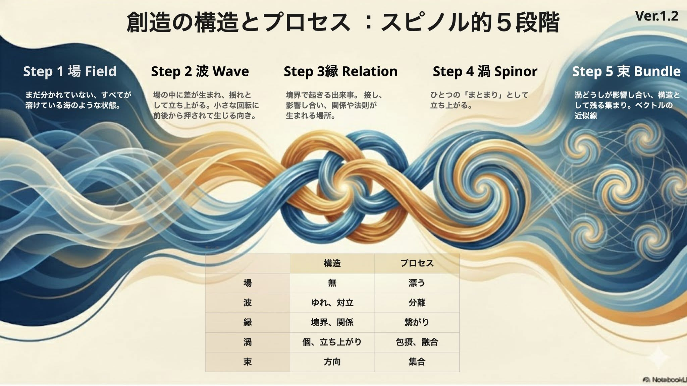

第一部
問いと、これまでの見方
何がプロジェクトを動かしているのか
pjdhiro の問い：私は何に駆られてプロジェクトを行うのか？ 私は何に駆られて生きるのか？
事業やプロジェクトは、ふつう構想から語られます。構想し、計画し、考えて決め、動かす。この道筋は、経営学が書いてきました。
けれど振り返ると、構想が言葉になる前から、何かが動き始めていたように感じることがあります。一人の中で、準備がもう始まっていたかのように、あとから点と点がつながることがあります。pjdhiro は、これを、スティーブ・ジョブズがスタンフォード大学の卒業式のスピーチ（2005 年）で話した、点と点は先を見てつなぐことはできず、振り返ってつなぐしかない、という話に近いと見ています。社会の動きや流行のように、場そのものが揺らいでいることも多く、その揺らぎに乗って、ときには逆を張って、動き出すこともあります。人が引き寄せられて集まり、何かが始まるのは、その中の一つの場合です。
作っている本人にも、自分が作っているのか、周りから生まれてきたのか、分からないことがあります。デザインや構想の成果について、pjdhiro は次のように感じています。
pjdhiro の体験：…私が作ろうとしているようで、場が渦を巻くように生まれてくる。私なのか環境なのかがわからないほど駆動源を複数感じる。因果なのか。相関なのか。
このページでは、人やプロジェクトを動かしているものを、駆動源と呼びます。問いは、この駆動源です。
詳しく — 経営学が書いてきた道筋と、まだ分かっていないこと
経営学やプロジェクトマネジメントは、構想が言葉になってからの道筋を、細かく書いてきました。目的を定め、計画を立て、人や資源を集め、進み具合を確かめて直していく。こうした記述は、多くの場面でそのまま効きます。どの考え方が何を駆動源にしてきたかは、次の章「経営学は、何を駆動源と見てきたか」に一覧にしました。
構想そのものについては、なぜ湧くのか、どこで、誰に、いつ、何から、どのように湧くのか、という 5W1H が、まだよく分かっていません。事業の機会が発見されるのかつくられるのかは、起業研究でも議論が続いています（Shane と Venkataraman は 2000 年に機会の発見・評価・活用を軸に分野を枠づけ、Alvarez と Barney は 2007 年に発見と創造の二つの見方を並べました）。
構想の手前で、準備が始まっていたかのように点がつながったり、場の揺らぎに動かされたりすることは、振り返れば多くの人が経験しています。Love駆動開発が見ようとしているのは、それが起きる背後で、人にはどうしようもなく働いている法則のようなものです。いまは、そのうちの「なぜ」に、駆動源という切り口から近づいています。
出典：Shane & Venkataraman (2000) "The promise of entrepreneurship as a field of research", Academy of Management Review 25(1):217（リヴァプール大学のサーバーに置かれた誌面の写しで本文照合済。分野の定義 p.218）／Alvarez & Barney (2007) "Discovery and creation: alternative theories of entrepreneurial action", Strategic Entrepreneurship Journal 1(1–2):11（研究団体 effectuation.org のサイトに置かれた誌面の写しで本文照合済。発見の理論と創造の理論 p.11）。
詳しく — 構想が言葉になる前に起きていること
pjdhiro の問い：たとえば、事業開発という作業は、本当に意図し、コントロールされ、意識的に可能でしょうか？
「事業開発」という言葉は、事業を意図して起こし、思うように進めていく行為を思わせます。研究の側から見ると、意図・コントロール・意識の三つとも、言葉が思わせるほど確かではなさそうです。
- 意図：ミンツバーグとウォーターズ（1983 年）は、意図して実現した戦略、意図したが実現しなかった戦略、意図していなかったのに形をとった戦略（創発的戦略）を分けました。ミンツバーグは 1994 年に、戦略はどれも創発の性質をいくらか帯びる、とも書いています。
- コントロール：ナイト（1921 年）は、確率で見積もれる「リスク」と、確率さえ分からない「不確実性」を分けました。そして、事業の利潤はこの不確実性を引き受けるところから生まれる、と考えました。
- 意識：ワイクらは 1999 年の論文で、人は動き出してから、その結果を手がかりに、何が起きているのかを振り返って見いだす、と書きました。ウェグナー（1999 年・2003 年）は、「自分がやった」という感じそのものが、考えと行為の関係から心が推し量って組み立てる解釈かもしれない、と論じています。
こうして並べると、「事業開発」は、起きたことを後から一本の物語に整えた呼び名、という面を持っているのかもしれません。その物語に入らなかったもの、物語の手前で動いていたものを、このページは問います。同じ形は、一人の中でも、人の集まりでも、社会でも現れます。
出典：Mintzberg & Waters (1983) "The Mind of the Strategist(s)", in S. Srivastva and Associates, The Executive Mind, Jossey-Bass, pp.58–83（著者のサイトにある本のスキャンで本文照合済。三つの戦略の定義 p.60）／Mintzberg (1994) "Rethinking Strategic Planning Part I", Long Range Planning 27(3):12–21（著者のサイトにある誌面の PDF で本文照合済。戦略が創発の性質を帯びる箇所 p.19）／Knight (1921) Risk, Uncertainty and Profit（Liberty Fund の Library of Economics and Liberty にあるパブリックドメインの全文で本文照合済。リスクと不確実性の区別は第 III 部第 8 章の段落 III.VIII.1、利潤と不確実性は第 III 部第 10 章の段落 III.X.33）／Colville, Waterman & Weick (1999) "Organizing and the Search for Excellence: Making Sense of the Times in Theory and Practice", Organization 6(1):129–148（ミシガン大学の機関リポジトリにあった誌面の PDF の Wayback の記録（2017 年 8 月 20 日）で本文照合済。Weick 1995 の p.55 を引く箇所 p.141）／Wegner & Wheatley (1999) "Apparent mental causation", American Psychologist 54(7):480（著者のハーバード大学の頁にあった誌面の PDF の Wayback の記録（2005 年 12 月 15 日）で本文照合済。要旨 p.480）／Wegner (2003) "The mind's best trick", Trends in Cognitive Sciences 7(2):65（同じ頁にあった誌面の PDF の Wayback の記録（2005 年 11 月 9 日）で本文照合済。p.65）。
経営学は、何を駆動源と見てきたか
この章では、経営学の代表的な考え方が、何を駆動源と見てきたかを並べます。
pjdhiro の問い：プロジェクトの駆動源は何？
戦略の見方は一つではありません。ミンツバーグたちは『戦略サファリ』（1998 年）の冒頭に、サックスの詩「群盲象を評す」を置きました。目の見えない人たちが象に触れ、鼻に触れた人は蛇、膝に触れた人は木のようだと言う詩です。みな一部は正しく、みな全体を取り違えていた、と結ばれます。（参考：ミンツバーグの学派を、駆動源と創造の流れで見る）
経営学は、市場と競争、会社の資源、目標と計画、行動からの学び、組織の文化、人の意欲など、いろいろなところを見てきました。どれも、事業を見る一つの見方です。
下の表は、代表的な考え方を、何を駆動源と見ているかで七つに分けたものです。外の環境から人の内側への順に並べ、右端の列に、それぞれがよく効く状況を書きました。
| 駆動源 | 代表する考え方 | 効果的な状況 |
|---|---|---|
| 外部環境（市場、競争、顧客、利害関係者、より広い環境） | 株主価値の最大化、競争戦略、破壊的イノベーション、マーケティング（コトラー）、ステークホルダー理論、環境学派 | 外から来る力が、人の引き寄せられていく向きと揃っている限りでの正解 |
| 内部の資源 | 資源ベース理論（VRIO） | 資源を生かす人が引き寄せられている限りでの正解 |
| 先に決めた到達点（目標、計画、効率） | 目標管理（MBO）、OKR、経営計画、科学的管理法、リーン生産 | 到達点がどこから湧いたかを問わない限りでの正解 |
| 行為と学習 | リーン・スタートアップ、リアル・オプション、創発戦略 | 何を確かめ、どこへ動くかが湧き続けている限りでの正解 |
| 集団の共有（規範、文化、存在意義） | 企業倫理、コンプライアンス、CSR、組織文化、知識創造理論（野中）、パーパス経営 | 集まりが開いていて、共有が湧き続けている限りでの正解 |
| 人の内側（共感、意欲、判断） | デザイン思考、動機づけ理論、合理的選択 | 共感や意欲がどこから湧くかを問わない限りでの正解 |
| 起業家の心（ビジョン、欲、本能） | アントレプレナー学派、エフェクチュエーション | その心が何に動かされているかを問わない限りでの正解 |
どの考え方も、合う場面ではよく効きます。一人が触れたところだけを見て、そこに象の全体があると思うと、言葉は中身の抜けたバズワードになっていきます。表の考え方が触れたところを重ねると、今度は問いが生まれます。どれも確かに象の一部に触れているのに、まだ何かが欠けているように感じる。Love駆動開発がしようとしているのは、まだ触れられていないところに触れてみることです。
外から内へ下りていくと、最後は起業家の心に行き着きます。ビジョンも、欲も、本能も、駆動源として確かに働いています。理論を何十年も更新してきたコトラーや野中郁次郎の歩みも、重心が、人の思いや価値観の側へ寄ってきたように見えます。では、目標や意欲や構想そのものは、なぜ発生するのか。Love駆動開発が追っているのは、その心のさらに背後で、心を動かしているものです。
表の考え方を一つずつ、よく効く場面と、正解として広げたときに起きやすい取り違えで見た表は、経営学の考え方は、どこまで効くかに書いています。
出典：Mintzberg, Ahlstrand & Lampel (1998) Strategy Safari（独訳 Strategy Safari. Der Wegweiser durch den Dschungel des strategischen Managements, 訳 J. T. A. Wegberg, FinanzBuch Verlag, 2012 の、出版社の試し読みの Wayback の記録（2019 年 10 月 20 日）で本文照合済（訳）。冒頭のサックスの詩 pp.15–17）／Saxe "The Blind Men and the Elephant"（Wikisource にあるパブリックドメインの The Poems of John Godfrey Saxe（1872 年）の版で本文照合済。スキャンの 279–281 枚目）／Kotler, Kartajaya & Setiawan (2010) Marketing 3.0（出版社 Wiley の試し読みで本文照合済。第 1 章 p.4）・(2021) Marketing 5.0（出版社 Wiley の試し読みで本文照合済。第 1 章 pp.3・5）／野中・勝見 (2020)『共感経営』（版元の親会社の日経BP が日経BOOKプラスで 2023 年 1 月 20 日に公開した「はじめに」で本文照合済）。表の分け方と「効果的な状況」の列は、Claude による整理です。
Love駆動開発は、何を駆動源と見るのか
前の章の表に並べた考え方は、それぞれ何かを駆動源と見てきました。では、Love駆動開発は、何を駆動源と見るのか。この章では、まずその問いに答え、そのあと、その答えを言葉でどう指し示すかを書きます。
Love駆動開発の駆動源
Love駆動開発の駆動源は、Love と呼びたいものです。このページでは、Love を、恋愛に限らず、人や物事を引き寄せ、つながりや縁を生む力として、ひとまず置きます。結論の章「Love と呼びたいものとは」では、この置き方を、人がその中にいる場のようなもの、へ広げます。
経営学の表の駆動源は、市場や目標や意欲や起業家の心のように、人が目で見て言葉で話せる大きさのものでした。Love と呼びたいものは、その背後で、それらを動かしているものです。言葉になった構想や共通の意図がまだ無いのに、何かが生まれ始める。一人の中でも、人の集まりでも、社会の流れの中でも、そうした動きは、構想が言葉になるより前から起きています。
Love駆動開発は、この駆動源と、それが生む構造やプロセスのように、プロジェクトという現象の裏側で見落とされているものを、pjdhiro がまとめてそう呼びたい名前です。
けれど、「Love です」と答えただけでは、ほとんど何も伝わりません。Love と呼びたいものは、言葉で論理的に説明しにくいところがあります。構想の手前にあるものは、直接は観えません。愛という言葉も、恋や好意のような、認知しやすい一面で読まれやすい言葉です。このページが長くなるのは、そのためです。
見えないものを、どう指し示すか
物理の前例 — 重力は、動かされているもので書かれてきた
見えないものを書いてきた前例は、物理にあります。重力そのものを見た人はいません。それでも、落ちるりんごと回る月が同じ法則に従うことや、銀河の外側のガスや星の回り方から光では見えない質量があることが、推し量られてきました。重力は、それに動かされているものの動き方で書かれてきました。ブラックホールの画像（2019 年公表）にも、中心そのものは写っていません。写っているのは、暗い影と、それを縁取る光の輪です。中心がどこにあるかは、まわりの光で分かります。
このページの書き方 — 円を重ねる
このページも、同じ書き方をします。Love と呼びたいものに動かされている現象と、それを書いた言葉を積み重ねます。一つ一つは、一つの円のように、ある範囲を囲みます。いくつもの円を重ねると、どれにも共通する重なりが残ります。ベン図で言えば、すべての円の AND の部分です。その重なりが、Love と呼びたいもののある場所を示します。
このページが重ねていく円は、おもに四つの探究です。この一年、pjdhiro は、「創造とは」「意識とは」「欠損駆動思考」と、読み物「愛は、重力に似ていないか」を続けてきました。どれも、重力と同じように、それぞれ別の側から、動かされているものの動き方を書いてきた探究です。このページでは、これを四つの探究と呼び、話の流れの中で、必要なところで一つずつ呼び出します。
詳しく — このページは、何を、どのように書くか
Love駆動開発と呼びたい現象を、pjdhiro はこれまで何度も経験してきました。その経験から、このページは、プロジェクトに対する視点と構えとやり方を言葉にします。そのために、経営学・経済学・社会学が対象としてきた領域を、駆動源という切り口から、心理学の視点で読みます。その際、物理学と量子論との構造の類似と、神経現象学の知見を参考にします。
言い換えると、こういうことです。事業や構想が動くとき、人は何かを思ったり感じたりしています。そのことを、神経の働きと照らして見ます。神経も、宇宙と同じ物でできています。そこで、思ったり感じたりすることの動き方を、宇宙にあるものの仕組みと並べてみると、似た形に見えます。このページでは、その似た形を手がかりに類推します。
このページは、物理学との構造の類似と、神経現象学（体験の記述と、神経の働きの知見を突き合わせる見方）や心理学の知見を、多く引いています。その多くは、四つの探究が、それぞれ調べてきたものです。引いた先は、巻末の「参照の一覧」にまとめました。
このページは、東洋の思想で古くから教えられてきたことを、西洋の科学の視点で確かめていく面も持っています。pjdhiro 自身が、そのように考えてきたからです。
出典：Rubin & Ford (1970) ApJ 159:379（NASA ADS が公開している誌面の走査で本文照合済。要旨 p.379、外側で平らな回転曲線 p.392）／Rubin, Ford & Thonnard (1980) ApJ 238:471（銀河の回転曲線。NASA ADS が公開している誌面の走査で本文照合済。光学像の外の質量 p.471 の要旨）／Event Horizon Telescope Collaboration (2019) ApJL 875:L1（M87 の画像。arXiv 1906.11238 にある誌面の版（CC BY）で本文照合済。光の輪と中心の暗さ p.1 の要旨）／『楞厳経』巻二（大正蔵 T19 No.945、111 頁上段）・『大智度論』巻九（大正蔵 T25 No.1509、125 頁中段）（どちらも SAT 大蔵経テキストデータベースで本文照合済）。
詳しく — 構造か、視点か、原理か、プロセスか
pjdhiro の問い：プロジェクトの構造を言ってるのか、プロジェクトを眺める視点なのか、プロジェクトがなぜ生まれ動くのかの原理のことなのか、デザインプロセスを言ってるのか。
四つの探究を並べると、どれか一つには収まりません。駆動源は、なぜ生まれ動くのかという原理に近く、重力の井戸の絵は、何がどこにあるかという構造に近い。場 → 波 → 縁 → 渦 → 束は、どう進むかというプロセスに近く、自分を分けていく作業は、どこから眺めるかという視点に近い。
同じ一つのものを、別々の側から見たもの、と読めます。構想の手前に、そして構想が言葉になったあとも、その下で動き続けている見えないものに、別々の側から触れてきた探究です。
読むときの注意 — 指は、月ではない
pjdhiro は、明快に表現すればするほど、一面的に誤解されると考えています。仏教の指月のたとえ（月を指し示す指は、月そのものではない。『楞厳経』巻二・『大智度論』巻九）のように、このページの言葉や仮説は、Love と呼びたいものそのものではなく、それを指す指です。
第一部では、問いを立て、プロジェクトの駆動源について、これまでの見方を確かめました。この読み物は、その駆動源を、Love と呼びたいものと見ます。
Love と呼びたいものは、目では見えません。第二部では、見えない駆動源を、形の似たものから見ます。重力と、物事が生まれるときの構造です。
第二部
見えない駆動源を、似た形から見る
Love は、重力に似ていないか
この章では、最初に重ねる円として、Love と呼びたいものを重力と並べて見ます。
Love と呼びたいものは、重力に似ていないでしょうか。ここでは、重力を重力場として見ます。重力場は、質量のまわりで歪みます。一般相対性理論では、この歪みを時空の曲がりとして書きます。ニュートンの力学では、質量のまわりの重力場を、くぼみの深さ（重力ポテンシャル）として描くことができます。
このくぼみを立体にした、すり鉢のような絵を、このサイトでは重力の井戸と呼びます。絵が何を描いているか、どこまでが物理の事実で、どこからがたとえかは、重力の井戸とはにまとめました。一般相対性理論では、星も光も、その重力場の中にいて、歪みに沿って進みます。中にいるものには、歪みそのものは目では見えません。
同じ形の、二つの井戸
中心＝太陽。くぼみの深さ＝重力ポテンシャル
中心＝愛。くぼみの深さ＝引き寄せの強さ（比喩）
（JavaScript が動く環境では、ここに二枚の 3D の井戸が並びます。どちらも格子が中心へ向かってくぼみ、その周りを五つの点が回ります。左の中心は太陽、右の中心は愛です。「中心から見る」を押すと、くぼみの底から周りを見渡せます。）
左は重力の井戸、右は同じ形の井戸の中心に愛を置いたものです。図はドラッグで回せます。右の図はたとえです。
pjdhiro の仮説：Love場というloveの粒でできてるかのような波の現れる場で、Loveの場の歪みに引き寄せられるように漂っているのが宇宙や私たち。
一人の中で点がつながっていくのも、場の揺らぎに動かされるのも、人が集まって何かが生まれ始めるのも、その歪みの中でのことかもしれません。

詳しく — 見えない中心を、自分を分けて見る
ここは、三つの順に進みます。自分からは見えない中心、それを見ようとして自分を分けていくこと、分けた先で感じられるもの、です。
pjdhiro の背景：場→波→縁→渦 というように、渦を巻くまでのエネルギーとして、重力や愛のような、ゼロで何もしない中心の、無のような駆動エンジンを探している。
重力の井戸の中心は、一度も動きません（中心の三つの性質）。それでも、すべての周回は、この動かない場所がつくったくぼみから生まれています。そして、井戸の底に立つと、周りのすべてが自分を中心に回って見えるのに、どちらを向いても映らない場所が一つあります。いま見ている、この中心そのものです。
中心が自分から見えないなら、それを見るには、見ている自分を分けていくことになります。
pjdhiro の見方：メタ認知とは、自分を分けていく作業でもあるはずです。止観して、自分の中を対象として指さすように観ていくと、最後に観察する私が残る。それすらも観ようとするところから、観る私と観られる私が同じになる。分けられなくなる。そこからのプロセスは、古典から量子論に変わるような、違う感覚になる。私がメタ認知を説明するとしたら、比喩として最も近いのは、電子をどこまでも細かく見ていく作業に似ていると思う。
分けていった先で、層が変わります。構想し、計画し、決めている私は、古典の記述で書けます。その私を分けていくと、観る私と観られる私が分けられなくなり、そこから先は違う感覚になる。その先で感じられるものを、pjdhiro は次のように書きます。
pjdhiro の像：観察し、される者だけになった後、その二つが融合する安定感よりは、見るしかできない私の頭頂の先に、へその緒で接続された母の存在が安定をもたらすような、落ち着きの感覚が近い。限りのなさは、その先が見えないという感覚。そもそも母がいることを、胎児は認識していないでしょう。母が摂取する栄養や酸素などの循環を含めれば、その先は宇宙すべてと接続している。
先が見えないのに、安定する。確かめて得る安心とは別に、確かめずにつながっている安心もあります。この流れの一次情報は、姉妹読み物「愛は、重力に似ていないか」の2 章から4 章です。
pjdhiro が探しているのは、場から渦が巻くまでを動かしている、この見えない中心のようなものです。次の章では、その周りで動かされているものの形として、この一年の探究でいちばん多く見てきた渦を見ます。
言葉は、波間に見えた渦の名前
この章では、井戸の中心の周りで動かされているものの形として、渦を見ます。そのあと縮尺を変えて、言葉で名前を付けられるのは、どの大きさのものかを見ます。
創造は、渦の形をしている
「創造とは」は、創造が、場 → 波 → 縁 → 渦 → 束 と進むと置いています。場が現れ、波が立ち、異なるものが縁で出会い、渦として結びつき、束として新しい形になる。この形と似たものが、30 の学問領域で報告されています。

pjdhiro はこれを「場と揺らぎが渦を生む」と縮めます。渦は場の揺らぎそのものが形になったもので、場から切り離して取り出せません。pjdhiro は、創造の構造とプロセスをある程度結論づけたと言い、信頼はそこまでではない、としています。
ただ、「創造とは」のトップページには、何が渦を巻くまでの波を生み出しているのか、つまり駆動源の問いは、置かれていません。Love駆動開発が見ようとしているのは、そこです。

詳しく — 創造の五段階
「創造とは」のトップページは、五段階をこう置いています。「場は創造が生まれる環境と条件、波は探索と揺らぎの過程、縁は異質な要素が出会う境界、渦は要素が結合し変容する核心的段階、束は新たな形式として統合される完成です」。
pjdhiro は、この創造の形を、大海と波の像にいちばん近いと見ています。
縮尺を変えて見る
何が渦を巻くまでの波を生み出しているのかを追うには、縮尺を変えることになります。経営学の表が見てきたのは、市場、組織、集団、人の心と、どれも人が目で見て、言葉で話せる大きさでした。
物理にも、似た持ち替えがありました。十九世紀の終わり、力学・熱・光・電磁気の理論は大きな成功を収め、残る課題は少ないと考えた人もいました。残った小さな食い違いを追って原子の中を覗くと、位置や速さといった常識の言葉が、そのままでは通じませんでした。それでも、その微細な世界の理解が、物がなぜ硬いのか、なぜ太陽が光り続けるのか、という大きな世界の説明になりました。
もっと身近な例もあります。熱い、という感じは、体で受け取る大きな世界の言葉です。温度が無数の分子の動きで説明できると分かったのは、目に見えない大きさを見てからでした。引き寄せられる、何かが湧く、という感じも、微細な世界で何かを受け取っているのかもしれません。
もう一つ、この先を読むための比喩を置きます。海を見ると、波間に渦が巻いているのが見えます。目で切り分けられるので、人は渦に名前をつけます。けれど、渦の中を探しても、渦になる原因は見つかりません。海が波を生み、その波間に渦が巻いています。渦は波と、波は海と、ひと続きです。では、波を生んでいるのは何でしょうか。海の波の多くは、風が立てています。その風は、太陽が大気を温めるむらから生まれます。潮の満ち引きは、月と太陽の引力が起こしています。渦を見て、渦が自分の力で回っていると思うと、波を生んでいるものを見落とします。
詳しく — 水と波は、離れていない（東洋の古いたとえ）
東洋の思想にも、同じ形のたとえがあります。『大乗起信論』（真諦訳）は、大海の水が風で波立つことを引いて、水の相と風の相は離れない、と書きます。別の訳（実叉難陀訳）は、海の水と波は、一つでもなく、別のものでもない、と書きます。二つに分けて名前を付けても、離れてはいない、という見方です。
この論書では、風は迷い（無明）のたとえで、このページの駆動源とは向きが違います。引用は Claude が大正蔵で確かめたもので、pjdhiro は原典を読んでいません。
出典：『大乗起信論』真諦訳（大正蔵 32 巻 No.1666、576 頁下段「如大海水因風波動，水相風相不相捨離」）・実叉難陀訳（大正蔵 32 巻 No.1667、585 頁中段「如海水與波非一非異」）（どちらも SAT 大蔵経テキストデータベースで本文照合済）。
ここから先、「場」という言葉は、創造の五段階の場も、物理の場も、同じ言葉で呼びます。渦が巻く、その下に広がっているもののことです。
言葉や記号や数値で切り取れるのは、人が認知できた大きさの世界、波間に見えた渦のほうです。
この先に出てくる言葉も、波間の渦に当てた名前として読んでみてください。意識も、信頼も、価値も、構想も、そうした名前の一つかもしれません。Love駆動開発が見ようとしているのは、その波を生んでいるもののほうです。
人が名前を当てたのは、認知しやすい形でした。では、何が、認知しやすさを決めているのでしょうか。目に見える光は、電磁波の中のごく狭い帯です。人はその帯の中にだけ、色の名前を当ててきました。超音波で周りを探るコウモリなら、世界をまったく別の形に切り取っているでしょう。切り取り方は、切り取る側の受け取り方で決まります。
詳しく — 古典物理から、量子論へ
1900 年、ケルヴィン卿は講演で、熱と光の理論にかかる「二つの雲」を挙げました。一つは、光を伝えると考えられていたエーテルの中を地球が動いている証拠が見つからないこと。もう一つは、エネルギー等分配の理論が、気体や固体の比熱と合わないことです。同じ年、プランクは、熱い物体が出す光の色の分布を説明するために、エネルギーがとびとびの塊でやりとりされる、と仮定しました。一つめの雲は、のちに相対性理論につながる問題の一つになり、二つめの雲は、プランクの熱放射の研究と並んで、量子論の出発点の一つになりました。
量子論の世界では、粒子の位置と運動量を、同時にいくらでも正確に決めることはできません（不確定性原理）。電子は、粒のようにも、波のようにも振る舞います。日常の言葉で組み立てた直観は、ここでは何度も裏切られます。
それでも、この微細な世界の理解が、大きな世界を説明しました。原子が潰れずに形を保つこと（不確定性原理）、たくさんの原子が集まっても物が体積をもち硬いこと（パウリの排他原理）。原子どうしが結びついて分子になること（化学結合）。太陽の中心で水素がヘリウムに変わり、光り続けること（トンネル効果がその反応を起こりやすくしている）。半導体と、いま使っているコンピューターも、この理解の上に建っています。
出典：Kelvin (1901) "Nineteenth Century Clouds over the Dynamical Theory of Heat and Light", Phil. Mag. 6th ser. 2:1–40（1900 年 4 月 27 日の王立研究所での講演。Internet Archive にある Smithsonian Libraries 蔵の誌面の走査（パブリックドメイン）で本文照合済。二つの雲 pp.1–2、エーテルの実験 p.7、比熱 p.18）／Passon (2021) "Kelvin's clouds", Am. J. Phys. 89(11):1037–1041（二つの雲がのちに特殊相対論と量子力学で解かれたこと。arXiv 2106.16033 の版（CC BY）で本文照合済。p.1 の要旨）／Planck (1900) Verh. Dtsch. Phys. Ges. 2:237（Internet Archive にあるハーバード大学図書館蔵の走査（パブリックドメイン）で本文照合済。エネルギーを有限の等しい塊から成るとする箇所 pp.239–240）／Heisenberg (1927) Z. Phys. 43:172（NASA の英訳 TM-77379（1983 年、NASA の公開 PDF）で本文照合済（訳）。訳 p.2・p.7）／Lieb (1990) "The stability of matter: from atoms to stars", Bull. Amer. Math. Soc. 22(1):1–49（物質の安定性とパウリの排他原理。Dyson と Lenard 1967 の証明を引く。出版社 AMS の PDF の Wayback の記録（2022 年 8 月 11 日）で本文照合済。pp.1・7・15）／Pauling (1954) ノーベル講演 "Modern structural chemistry"（ハイトラーとロンドン 1927 の水素分子の扱い。nobelprize.org の PDF で本文照合済。p.2）／Bethe (1967) ノーベル講演 "Energy production in stars"（障壁を通り抜ける理論と、その恒星への適用の歴史。nobelprize.org の PDF で本文照合済。pp.2・6）／Bethe (1939) Phys. Rev. 55:434（出版社 APS の PDF の Wayback の記録（2026 年 9 月 8 日）で本文照合済。p.434 の要旨）。
詳しく — 熱いという感じは、分子の動きだった
十九世紀の後半、クラウジウスとマクスウェルは、気体の温度を、目に見えない無数の分子の動きの平均として説明しました。手を近づけて熱いと感じるとき、体は、分子が速く動いていることを、一つの感じとして受け取っています。熱いという感じそのものは、分子の動きが分かったあとも、変わらずそこにあります。微細な世界の説明は、体の感じを消さずに、何を受け取っていたのかを教えてくれました。
出典：Clausius (1857) Ann. Phys. 176:353（同時代の英訳 "On the Nature of the Motion which we call Heat", Phil. Mag. 4th ser. 14:108–127（1857 年。訳者名は誌面に無い）を、Internet Archive にあるロンドン自然史博物館図書館蔵の走査（パブリックドメイン）で本文照合済（訳）。訳 p.111）／Maxwell (1860) Phil. Mag. 4th ser. 19:19, 20:21（Internet Archive にあるロンドン自然史博物館図書館蔵の走査（パブリックドメイン）で本文照合済。第 1 部 pp.19・30）。
詳しく — 粒子は、場の揺れ方だった
物理の微細な世界にも、波間の渦と同じ形があります。場の量子論では、電子や光子は、場の揺れ方の一つ（励起）として扱われます。電子という名前は、場のある揺れ方に、人が当てた言葉です。
量子論ができたあと、1920 年代の後半から、光や電子を「場」の側から書く理論が組み立てられました。ディラックは 1927 年、電磁場を量子論で扱い、光子を電磁場の揺れのひと塊として書きました。この見方では、場が揺れると粒子が現れ、揺れが収まると粒子は消えます。何もないように見える真空でも、場は揺らいでいます。
一個の電子を、それだけで独立した小さな玉として思い描くと、この世界ではつまずきます。電子は、一つの粒として数えられるものでもあり、場のある揺れ方に人がつけた名前でもあります。
出典：Dirac (1927) "The Quantum Theory of the Emission and Absorption of Radiation", Proc. R. Soc. A 114:243（出版社 Royal Society の PDF の Wayback の記録（2021 年 9 月 21 日）で本文照合済。pp.243–245）。
第二部では、見えない駆動源を、形の似たものから見ました。ここまでで、問いを立て、駆動源を Love と呼びたいものと見て、その手がかりを探してきました。
第三部では、人の内側を見ます。人は、世界をどう受け取り、どう解釈しているのか、です。
第三部
人は、世界をどう解釈するか
人は、生存と信頼の信号で世界を切り取る
この章では、駆動源を受け取る側を見ます。ここでも、動かされているものから見ていきます。人のすぐ近くで動かされているものの一つが、体に湧いて意識に上る信号です。あとの「価値は、受け取る人の意識で生まれる」の章も、この信号の話の上に立っています。
コウモリと人とでは、世界の切り取り方が違いました。では、人は何で切り取っているのでしょうか。人は、目や耳で受け取ったものの中から、何を大事なものとして拾うかを選んでいます。「意識とは」は、その選び方に、二つの方向があると置いています。生き延びられるかどうか（生存）と、つながっていられるかどうか（信頼）です。生存の側は脅威・安全・地位・資源を、信頼の側は愛着・所属・信頼・間主観性を見ています。

なぜ、生存とは別に、信頼を置くのでしょうか。pjdhiro は、精神分析や発達心理学、神経伝達物質、神経経済学の本などから、頭では知識を持っていました（影響を受けた心理学）。その中で、次の体験をしています。
pjdhiro の体験：メタ認知の最終でウロボロスのように見る私と見られる私が生まれる時、そこにしっくり感はなくて、どちらかというと見る私とは別の、頭頂の先の臍の緒のようなケーブルの先に宇宙のような安定感をあたえる何か、存在があるかのような感覚がある。
この安定感は、生き延びるための条件をそろえて得られるものとは、別のものに見えます。pjdhiro は、この安心感を生む存在への想いを、人は信頼と読んで切り取っているのかもしれない、と見ています（本人の言葉は、「Love と呼びたいものは、どういう面を持つか」の章の「ずれを知らせる物差し」に）。
言葉や数値のような記号は、一列に並んでいます。pjdhiro の見立てでは、人は生存と信頼の二つの値を見込んで（予測して）います。受け取るのが一列の記号だと、「生存についての値は同意、しかし、信頼側の値は未知、など」ということが起こります。
pjdhiro の見方：…過剰に生存に関する欲求を追い求めると信頼を損なうのではないかという違和感が湧く
その違和感の出どころは、記号の上には見当たりません。それでも、その違和感を閉じずに、開いたまま抱えておくことはできます。
目に見える光の幅にも、ものの見方の広さにも限りがあり、認知の届かないところはいつもあります。光では見えない質量は、銀河の外側の星の回り方から推し量られました。同じように、記号の上では 0 と出るところでも、体は何かを受け取っているのかもしれません。
詳しく — 二つは、取り違えられ、入り込み合っている
pjdhiro の例：お金を追っていたつもりが、実は、負けると惨めだから、つまり人との間での自分の位置を気にしていた。
「意識とは」は以前、多くの苦しみは、信頼軸の問題を生存軸の達成で解こうとする誤適用から生じる、と置いていました。いまは、二つが取り違えられている場面の一つとして読んでいます。事業でいえば、「価値創造は、どこで誤解されるか」の章の利益と長期の問いがその例です。
詳しく — まだ分からないこと：身体と意識を結ぶ信号
pjdhiro の問い：メタ認知の対象と包容に対して、身体と意識を結ぶ信号がどのようなものか？これは心と体の接続点の謎と絡むとても重要なこと。
この問いは、「意識とは」で、神経現象学の研究と照らし合わせて調べ始めたところです。不安を、先の脅威の不確かさと、それに備える働きの側から捉える研究があります（Grupe と Nitschke 2013 年）。不確かさが生存の信号を鳴らしている、と読むこともできます。
出典：Grupe & Nitschke (2013) "Uncertainty and anticipation in anxiety", Nature Reviews Neuroscience 14:488（PMC の著者稿で本文照合済。要旨と導入の不確かさと備えの段）。
では、記号の上に出どころの見えないこの違和感は、何なのでしょうか。
信号は、体の内側から湧く
記号の上に出どころの見えないその違和感は、体の内側から湧いている信号なのかもしれません。この章では、「意識とは」が置いている見方から、信号がどこで湧き、どう受け取られるかを見ます。結論の章「それが、プロジェクトの駆動源である」の「体は、つながりの安定と、そこからのずれを、信号として受け取っています」は、この章の上に立っています。
体は、心拍や呼吸、内臓の具合のような内側の状態を、いつも受け取っています。この感覚は内受容感覚と呼ばれ、体の生理的な状態の感覚と定義されています（Seth 2013 年。定義は Craig 2002 年による）。「意識とは」は、信号の出どころをここに置いています。意識は、抽象的な考えから始まるのでなく、体の状態の上に立ち上がる、という見方です。
体の内側の感覚の多くは、予測でできている、と考える研究があります（Barrett と Simmons 2015 年、Seth 2013 年）。脳は体の状態を先に見込み、体から届いた信号で、その見込みを直していきます。この見方では、信号として目立つのは、見込みと、受け取ったものとのずれです。前の章の pjdhiro の見立てでは、人は生存と信頼の二つの値を見込んでいました。信頼の側でいえば、見込まれているのはつながりの安定で、そこからのずれが違和感として湧く、と読むことができます。
ずれの全部が、意識に上るわけではありません。研究は、予測とのずれが見過ごされることもあると書いています（Barrett と Simmons 2015 年）。「意識とは」も、ずれの多くは気づかれないまま吸収され、一部だけが先へ送られる、と置いています。
体の内側の感覚は、ふつう、快いか不快か、落ち着いているか高ぶっているか、くらいの大まかな感じとして経験される、とも書かれています（Barrett 2017 年）。言葉になる前に、ぼんやりした感じとして届く、ということです。違和感の出どころが記号の上に見当たらないのは、このためかもしれません。
予測とのずれと、人が感じる欠けは、同じところで起きていても、書き方の水準が違います。ずれは、外から測られるものです。欠けは、本人が何かが足りないと内側から感じる経験です。ずれの一部だけが、欠けの芽になるのかもしれません。それが欠けとして感じられるところは、次の章で見ます。
詳しく — 測られたものと、感じたものは、食い違うことがある
体の内側の感覚については、感じ取りの正確さと、自分の感じ取りへの評価と、その評価が当たっているかの気づきを、別々のものとして分ける研究があります（Garfinkel ら 2015 年）。
一人称で感じていることと、外から測られることは、いつも重なるとは限りません。二つを照らし合わせる調べ方は、「意識とは」で始めたところです。
出典：Seth (2013) "Interoceptive inference, emotion, and the embodied self", Trends in Cognitive Sciences 17:565（サセックス大学の機関リポジトリにある誌面の PDF で本文照合済。内受容感覚の定義（Craig 2002 を引く）と内受容の推論 p.565、予測とのずれで直す箇所 p.566 の Box 1、図 2 p.568）／Barrett & Simmons (2015) "Interoceptive predictions in the brain", Nature Reviews Neuroscience 16:419（本文照合済）／Barrett (2017) "The theory of constructed emotion", Social Cognitive and Affective Neuroscience 12:1（PMC5390700 の全文で本文照合済）／Garfinkel ら (2015) "Knowing your own heart", Biological Psychology 104:65（サセックス大学の機関リポジトリにある誌面の PDF（CC BY-NC-ND 3.0 の公開）で本文照合済。三つの次元の区別 p.65 の要旨）。
信号と考えがずれると、欠けを感じる
この章では、構想や設計、計画のいちばん最初の段階を見ます。Love と呼びたいものは、そのものとしては見えません。考えや心と、体で湧く信号とが別々になるとき、人は何かが欠けていると感じやすくなる、と pjdhiro は見ています。生存と信頼の信号の見込みと経験がずれたときに、それが感じられるのかもしれません。pjdhiro は、Love と呼びたいものが駆動しているから、人は受け身でこの欠けを感じてしまう、と見ています。欠けは、やがて解くべき問題になります。pjdhiro は、構想や設計、計画はここから始まり、その先の問題解決は経営学がこれまで扱ってきた範囲だと見ています。
「欠損駆動思考」は、この欠けを欠損と呼び、「予想と現実の誤差を意識が『欠け』として捉えた主観的経験」と置いています。欠損駆動思考は、欠けている感じや違和感などを駆動源にする思考や精神の構えです。その範囲や構造、プロセスは、いまも探索中です。
欠損駆動思考は、誤差を問いとして拾う態度とも、見えている面とは別の向きに何かがあると感じていることとも言えます。pjdhiro は、これを Love駆動開発に必要な考え方の一つと見ています。人が認知できないものに触れる手段は、ほかにもあるかもしれません。
pjdhiro のたとえ：欠損駆動思考と呼んでいる私の体感をたとえるなら、虚軸に値があって、しかも、認知上は 0 の直観です。
虚軸は、回転の掛け算で見ると分かりやすい軸です。数に −1 を掛けると、向きが反対になります。数直線の上で 180 度回したことになります。自分自身を掛けると −1 になる数を i と書き、i を 1 回掛けると 90 度回ります。i の付いた数が並ぶ軸は、もとの数直線と直角に立ちます。これが虚軸です（くわしくは前提知識のページ「回転の掛け算」）。直角に立つ軸の値は、もとの軸の上で測ると 0 になります。地図の上から高さを測ると、どれほど高い山でも 0 と出るのと似ています。
pjdhiro は、「考えて決める」行動の軸と直角に、存在の軸が立っているかもしれない、と見ています。言葉や数値の記号は、「考えて決める」軸の上に並ぶものです。前の章「人は、生存と信頼の信号で世界を切り取る」で、記号の上では 0 と出るところでも体は何かを受け取っている、と書いたのは、この 0 のことです。
「欠損駆動思考」は、反射的に処理せず、誤差を問いとして保持する機能を抱持と呼び、欠損に気づいたとき、すぐに答えを出さず、問いのまま持ち続けることを大切にしています。違和感をすぐに解消せずに抱えておくと、一つの面だけに縛られた判断を、しにくくなるのかもしれません。

詳しく — なぜ、0 のところに何かを感じるのか
「Love は、重力に似ていないか」の章の見えない中心を、自分を分けて見るで触れた「先が見えないのに、安定する」の安定感も、この 0 のところで受け取っている大きさなのかもしれません。
pjdhiro の見方：なぜゼロに虚軸を観れるのか？は、臍の緒の安定感は感じているから、というのは一つだし、全てかもしれない。だから「意識とは」で生存と信頼の信号について追っていた。その信号がゼロの場所で湧いてしまうとしたら何？と思うことが、欠損への気づきだと思う。
数には出ないこの大きさを、人は大事なものとして感じることがあります。pjdhiro は、この虚軸の値が、人類にとっての価値でもあると見ています。経営学が「価値創造」と呼んできたものと、ここでつながります。
価値は、受け取る人の意識で生まれる
この章では、受け取った信号が、人の中で価値として感じられるところを見ます。前の章では、数には出ない虚軸の値を、pjdhiro は人類にとっての価値でもあると見ている、と書きました。では、価値は、どこで生まれるのでしょうか。
人は、生存と信頼の信号で世界を切り取るの章で、人は前段で湧く信号によって世界を切り取っている、と見ました。
pjdhiro の見方：価値は顧客の意識で生まれる。その前段の信号によって。
作り手が商品に価値を込めることも、実際に起きています。込めることと、顧客の意識で感じることがどうつながるかを見るために、「価値」という言葉を分けておきます。価値は曖昧な言葉で、性質の違うものが一つの語に混ざっています。言葉は、波間に見えた渦の名前の章で見た、「創造とは」が置く創造の過程、場 → 波 → 縁 → 渦 → 束 を、受け取る側に当てはめてみると、たとえば次のように分けられます。
- 場：顧客が生きている状況、関係、知っていること、価値観。世界や時代、文化のような広いものも含みます。
- 波：場の中に差が生まれ、顧客と製品に分かれます。需要と供給のように、求める側と差し出す側が向かい合います。
- 縁：顧客と製品が出会うところです。出会うと、顧客の中に前段の信号が湧きます。商品やサービス、作り手が込めたものは、ここで価値を感じるきっかけになります。
- 渦：湧いたいくつもの信号を、意識がひとまとまりの大事なものとして受け取っているところです。価値を感じている状態です。
- 束：言葉や評価や価格になり、人のあいだで共有されたものです。価値を言い表したものです。
こう分けると、価値を感じている状態は、渦の段、つまり顧客の意識の中にあります。作り手が込めたものは、縁の段で信号が湧くきっかけになります。だから、込めることと感じることは、一続きの動きと読めます。どう感じるかは、顧客が生きている場によって変わります。
ふだん「価値」と言うとき、縁のきっかけ、渦の状態、束の言い表したものが、一つの言葉に重なっています。重なったまま「価値が生まれる」と言うと、どこで何が起きているのかが見えにくくなります。
詳しく — 五つの段を、ここまでの章から
顧客が何を知り、何を当たり前と感じているかは、場の中で育ちます。社会の側が何を認識しているかで、同じ製品に感じられる価値も変わります（儲けることと、価値を認識できること）。
波は、分かれることです。同じ場の中に差が生まれることで、顧客と製品が、求める側と差し出す側として向かい合います。
縁で湧く信号は、人は、生存と信頼の信号で世界を切り取るの章で見た、「意識とは」が置く二つの方向の信号です。体の層で湧き、意識がそれを受け取ります。
渦について、pjdhiro は、価値も Love と構造が似ていて、言葉にしづらい信号のまとまりだ、と見ています。「信号と考えがずれると、欠けを感じる」の章で見た虚軸の値も含めて、たくさんの軸があり、おそらく形容詞と同じくらいの数の軸の総合だ、とも見ています。
束になった言葉や価格は、また場の一部になり、次の出会いや、作り手の込め方にも入り込みます。
五つの段は、一度で順に進むとは限りません。同時に走り、互いに入り込み合っています。作り手の側にも同じ五つの段があるとすると、二つの渦が縁で出会う、と見ることもできるかもしれません。
先が見えないとき、どの信号が湧くか
「人は、生存と信頼の信号で世界を切り取る」の章の畳みで、不確かさが生存の信号を鳴らしている、と読めることに触れました。では、先が見えないとき、湧くのはいつも生存の信号なのでしょうか。この章では、同じ先の見えない状況で湧く信号が、安全と感じられているかどうかで、また人によって、成長の段階によって、違って現れることを見ます。
先が見えないとき、体はまず備える、と研究は書いてきました。不安を、先の脅威の不確かさと、それに備える働きの側から捉える研究があります（Grupe と Nitschke 2013 年）。ストレスの反応は、不確かさの下では、何かが起きてから生まれるのでなく、はじめから働いているもので、安全だと感じているあいだだけ抑えられている、と置く研究もあります（Brosschot、Verkuil、Thayer 2016 年・2018 年）。この読みでは、生存の信号は、ある人や、ある成長の段階に固有のものではなく、安全が感じられなくなれば誰にでも戻ってくるものになります。
安全の感じは、どこから来るのでしょうか。同じ研究は、安全の感じの源の一つに、人や、群れで生きる動物にとっての、強いつながりの網を数えています（Brosschot、Verkuil、Thayer 2018 年）。ここから、二つの信号の関係を、一つの形で読み直せます。生存の信号を、安全が感じられないときに戻ってくるもの、信頼の信号を、それを抑えている安全の感じとして書く形です。「意識とは」は、二つの信号を二つの方向として書いています。二つの別々の信号なのか、一つの備えとそれを抑えるものなのかは、「意識とは」の書き方の根に触れるので、まだ決めていません。どちらの書き方でも、二つは同時に体の中にあり、切り離されてはいません。
ところが、先が見えないのに、不安でなく安定が湧くことがあります。「Love は、重力に似ていないか」の章で見た、頭頂の先の臍の緒の像です（pjdhiro の像）。姉妹読み物「愛は、重力に似ていないか」は、なぜ不安でなく安定なのかの筋を三つ並べています（4 章）。見えないのは、欠けているからでなく、そこに乗っているから。安定は、知ることからでなく、つながっていることから来る。先が見えないことが不安になるのは、その先を他として見ているときで、切り離されていなければ、見えない先は自分が属している側になる。この三つは、一人称の報告を資料にした整理で、証明ではありません。この像では、つながっている相手は見えず、確かめられてもいません。確かめて得る安心と、確かめずにつながっている安定は、外から見ると似ていて、内側で違います。
では、同じ先の見えない状況は、人によって、また成長の段階によって、どう違って現れるのでしょうか。「愛は、重力に似ていないか」は、ものの見方の広さの帯（ものの見方の広さスクリーナーが測る段階）に沿って、一つの表を置いています（「二つでない、とはどういうことか」）。不確かさを脅威として、急いで埋める。不確かさを対象として観て、埋めずに耐える。不確かさを場の揺らぎとして、そこから渦が起きる側から観る。先が見えないまま、確かめずに落ち着く。湧く信号は、この順に、生存から、生存と信頼の混在、信頼へと寄っていく、という推測です。この表は仮説です。成長の段階で人を分けて、先の見えない状況での体の反応を測った研究は、「意識とは」の原典の照合では見つかりませんでした。研究が人を分けているのは、瞑想のような練習の時間です（下の畳み）。
ここまでを合わせると、分かれ目は、先の見えなさの大きさでなく、安全が感じられているか、つながりが感じられているかで動く、と読めます。それは人によって、また同じ人でも時によって変わり、一人の中で両方が湧いていることもあります。埋めずに耐えている段では、生存の信号がまだ鳴っていて、信頼の信号がそれを抑えている、と読めます。pjdhiro は、信号がゼロの場所で湧いてしまうとしたら何か、と思うことが、欠損への気づきだと見ています（「信号と考えがずれると、欠けを感じる」の章の畳み）。湧いているのが生存の信号なら欠けは埋めるべき欠陥として扱われ、信頼の信号なら源として観られる、という結論の読みは、この分かれ目の上に立っています。どちらが湧いているかを外から測って分ける指標は、まだありません。
詳しく — 備えと、安全の感じは、どう測られてきたか
Grupe と Nitschke（2013 年）は、不確かさがあると先に備えることが難しくなり、それが不安につながる、と置き、先の脅威の不確かさに備える動きを、脅威の起きやすさと重さに見合っているあいだは適応的なものとして書いています。
Brosschot、Verkuil、Thayer（2018 年）は、ストレスの反応を、いつも入っていて、安全が感じられているときだけ前頭前野に抑えられている既定のものと置きました。安全が感じられなくなると、その抑えはすぐに外れます。抑えが外れることは、ストレスの反応を起こすのでなく、許すことだ、とも書いています。安全の感じを損なうものとして、孤独や低い社会的な地位、都市の環境、幼いころの逆境を挙げ、強いつながりの網を、安全の源の一つに数えています。
先が見えないことが、見えないと分かっている状態として持たれているなら、警報は鳴りにくい、という読みの足場もあります。Yu と Dayan（2005 年）は、よく知った状況の中で手がかりが当てにならないと分かっている不確かさ（予期された不確かさ）と、知らせのない状況の切り替わりが起こす不確かさ（予期されない不確かさ）を分け、別々の神経の調整の系に当てる提案をしています。瞑想を一万時間を超えて積んだ人では、痛みの前（予期の段）に島皮質と扁桃体の活動が低く、痛みの最中には島皮質と帯状回の活動がむしろ強く、痛みの強さは初心者と同じに、不快さはより少なく報告されました（Lutz ら 2013 年）。信号が鳴らなくなるのでなく、予期の段で鳴らず、出来事が来たときには鳴る、という形です。
出典：Grupe & Nitschke (2013) "Uncertainty and anticipation in anxiety", Nature Reviews Neuroscience 14(7):488（PMC の著者稿で本文照合済。要旨と導入の不確かさと備えの段）／Brosschot, Verkuil & Thayer (2016) "The default response to uncertainty and the importance of perceived safety in anxiety and stress", Journal of Anxiety Disorders 41:22（本文照合済）／Brosschot, Verkuil & Thayer (2018) "Generalized Unsafety Theory of Stress", International Journal of Environmental Research and Public Health 15(3):464（PMC の公開版で本文照合済。要旨・1.2 節・3 節）／Yu & Dayan (2005) "Uncertainty, neuromodulation, and attention", Neuron 46(4):681（著者のサイトの PDF で本文照合済。p.681 の要旨と導入）／Lutz, McFarlin, Perlman, Salomons & Davidson (2013) "Altered anterior insula activation during anticipation and experience of painful stimuli in expert meditators", NeuroImage 64:538（PMC の著者稿で本文照合済。要旨と方法）。
詳しく — ものの見方の広さと、湧く信号の表（仮説）
「愛は、重力に似ていないか」の表を、湧く信号の列だけ残して写します。帯は、ものの見方の広さスクリーナーが拠った資料（O'Fallon 2020 年）の段階の呼び方です。
| 帯 | 「先が見えない」の現れ方 | 湧く信号（推測） |
|---|---|---|
| 4.x | 不確かさは脅威。急いで埋める、決める | 生存 |
| 5.0〜5.5 | 不確かさを対象として観て、埋めずに耐える。耐えている私は、まだ外にいる | 生存と信頼が混在。耐えるのは、生存の信号がまだ鳴っているから |
| 6.0 | 不確かさは場の揺らぎ。耐える対象でなく、そこから渦が起きる側 | 信頼 |
| 6.5 | 耐えていた私も、観られる側に入る | 信頼 |
| 6.5〜7 | 先が見えないまま、確かめずに落ち着いている。緒の安定 | 信頼が主 |
この表は、対話の中で Claude が仮に置き、pjdhiro が検証したい箇所として受け取ったものです。6.5〜7 の行は、pjdhiro の一人称の報告だけが根拠です。5.0〜5.5 の行は、ネガティブ・ケイパビリティと呼ばれてきたものに近いところです。ただし、この言葉を最初に書いたキーツの手紙（1817 年）は、不確かさや神秘や疑いの中に、事実や理由へ苛立って手を伸ばさずにいられること、と言っていて、耐えることや努力を言っていません。耐えずに済んでいるなら、同じ言葉は 6.0 の側にも読めます。
成長の段階で人を分けて、先の見えない状況での体の反応を測った研究は、見つかっていません。瞑想の研究が人を分けているのは練習の時間で、上の畳みの Lutz ら（2013 年）も、一万時間以上を積んだ人と、瞑想の経験のない人とを比べています。練習の時間から成長の段階への読み替えは、仮説のままです。一人称の報告と外からの測定が食い違うことは、「信号は、体の内側から湧く」の章の畳みで見ました。原典の照合の本体は、「意識とは」にあります。
出典：O'Fallon (2020) "States and STAGES: Waking up Developmentally", Integral Review 16(1)（本文照合済。1.5〜6.5 の帯の一覧 p.20、6.0・6.5 の定義 p.29）／Keats (1817) George と Tom 宛の書簡、1817 年 12 月 22 日付、Colvin 編 Letters of John Keats to His Family and Friends Letter XXIV（Project Gutenberg の公開版で本文照合済。原本は伝わらず写しで残り、日付は版で揺れる）。
信頼は、関係の積み重ねの中で育つ
「信号は、体の内側から湧く」の章で、体は見込みとのずれを信号として受け取る、と見ました。では、信頼の側の見込みは、どこから来るのでしょうか。この章では、信頼の側の信号が、関係をくり返し経験する中で育つことを、心理学の知識から見ます。「Love と呼びたいものは、どういう面を持つか」の章の「確かめずにつながっている安定」は、この章の上に立っています。
愛着の研究は、子どもが養育する人との関係をくり返し経験するうちに、その関係を、自分と相手についての見込みとして持つようになる、と書いてきました。ボウルビィは、この見込みを内的作業モデルと呼びました。相手は応えてくれるか、という見込みが、のちの人との関わり方の下地になる、と言われています。
安心できる相手がいると、子どもはその人を拠点にして離れ、周りを探り、不安になると戻ってきます。この拠点を、愛着の研究は安全基地と呼んできました（ボウルビィ、エインズワース）。安心があることで、離れて探ることができる、という見方です。
この関係は、目の前にいるときだけ働くのではありません。違和感をすぐに解かずに抱えておくこと（「信号と考えがずれると、欠けを感じる」の章の抱持）は、一人では続けにくく、安定した関係に支えられる、という流れで、pjdhiro は次のように言っています。
pjdhiro の見方："内面に" 信頼できる誰かがいるから。物理的にいなくても、死んだ人でも大丈夫です。小さい頃のお母さんの記憶でも大丈夫です。
内的作業モデルも、関係が心の中に残ることを言う言葉です。積み重ねには、安心できた経験だけでなく、応えてもらえなかった経験も入ります。愛着の研究は、その違いを、子どもが関係に向かう型の違いとして書いてきました。
信頼は、こうしてくり返しの中で積み重なった見込みの上に立っている、と読めます。では、まだ積み重ねのない先に向けて、人は何を見込むのでしょうか。
詳しく — 愛着の研究が書いてきたこと
エインズワースとボウルビィは 1991 年の論文で、ボウルビィが愛着の行動を、食べることや性の行動と並ぶ人の行動の大きな柱とし、その働きを身を守ることに見た、と書いています。信頼の側の信号と生存の側の信号が、入り込み合っている例の一つと読むこともできます（「人は、生存と信頼の信号で世界を切り取る」の章）。
エインズワースらは、子どもが養育する人と離れ、また会う場面を観察し、そのときの振る舞いから、愛着を安定した型と不安定な型に分けました。再会で喜んで迎える子どももいれば、避ける子どももいます。不安定な型は、避ける型と、両価的で抵抗する型に分けられました。
体の側では、人は近くに他者がいることを前提にして、脅威への反応を節約している、と置く理論があります（Coan と Sbarra 2015 年）。手を握る相手がいると、先の見えない脅威への脳の反応が弱まる実験は、「Love と呼びたいものとは」の章の畳みで触れています。ただし、心の中に残った関係で同じ効果が出るかは、照らし合わせられる研究をまだ見つけていません（参考：「意識とは」）。
出典：Ainsworth & Bowlby (1991) "An ethological approach to personality development", American Psychologist 46(4):333–341（ストーニーブルック大学の愛着研究のサイトにあった打ち直しの写しの Wayback の記録（2005 年 5 月 14 日）で本文照合済。頁は写しの頁。安全基地 pp.2・6、愛着の行動の働き p.5、再会の振る舞い p.7、内的作業モデル pp.7–8、不安定な型の二つ p.8、関係への見込み p.9）／Coan & Sbarra (2015) "Social Baseline Theory: the social regulation of risk and effort", Current Opinion in Psychology 1:87–91（PMC の著者稿で本文照合済。導入と結び）。
期待は先に向き、信頼は積み重ねの上に立つ
「人は、生存と信頼の信号で世界を切り取る」の章では、人は生存と信頼の二つの値を見込んでいる、と書きました。見込むことには、先に向いたものと、積み重ねの上に立つものとがあります。この章では、心理学の知識から、この二つを期待と信頼として分けて見ます。あとの「構想は、まだ分からない」の章は、この違いの上に立っています。
pjdhiro は、受容についての対話で、二つの流れを並べています。
pjdhiro の見方：キューブラー・ロスの「死の受容」は死にゆく人の心理の変化を「否認」「怒り」「取り引き」「抑うつ」「受容」の 5 段階としてます。これは死以外の「受容」にもかなり当てはまるように思います。また、新田信也という方は、ひきこもりからの脱却を、「期待」「自惚れ」「おせっかい」「裏切られ」「諦念」と進むとしています。怒りは引きこもりを生みます。取り引きでは予期や警戒といった将来予測が入ります。裏切られると抑うつになります。受容は諦め、手放すことで達成されます。両者は似ていると思います。
この流れの最初にある期待は、先に向いた感情です。これから起きることを、望む方向で思い描きます。期待には、過去の経験や、確率の見積もりを精確にする働きはありません。働きは、動き出すためのエネルギーです。信頼は、過去から今までの積み重ねの上に立ち、良いことも悪いことも含めて持っています。人は、生存と信頼の信号で世界を切り取るの章の、信頼の側の信号が積み重なったもの、と読むこともできます。期待は、良い結果だけを見る側に寄りやすい。二つは日常語では混ざりますが、向いている時間と、含んでいる中身が違います。
詳しく — 心を守る動きと、裏切られてから
精神分析と防衛機制の研究は、不安から心を守る動きの中に、相手や計画を良い面だけで見る理想化（クライン、1946 年）や、現実の代わりに頭の中の像で満たす空想（ヴァイラント、2011 年）を数えてきました。
pjdhiro の見方：新田信也は、「期待は悪か」という問いを立てて、答えています。私も経験から同意していて、期待は裏切られてからがキックオフだと思う。そのあとに人は、絶望したり、他責したり、受容したりします。
期待の像が立ったとき、人は動き出します。その像が裏切られたところから、始まるものがあります。裏切られは、「信号と考えがずれると、欠けを感じる」の章で見た、予想と現実の誤差を欠けとして捉える経験と、同じ場所です。pjdhiro の言う流れの「裏切られ」から「諦念」への移りは、三つのうちの受容にあたります。
出典：pjdhiro「対話: 受容について」（uminomae.github.io/pjdhiro/dialogue-acceptance/）／期待と信頼の軸＝awareness-space CN-006／Klein (1946) "Notes on some schizoid mechanisms", International Journal of Psycho-Analysis 27:99（本文照合済。早い時期の防衛に理想化を数える箇所は p.99、良い面を大きくして迫害の恐れから守る箇所は p.101。写しは、Internet Archive にある国際精神分析大学ベルリンのコレクション）／Vaillant (2011) "Involuntary coping mechanisms: a psychodynamic perspective", Dialogues in Clinical Neuroscience 13(3):366（本文照合済。PMC3182012 の全文。空想を未熟な防衛に数える箇所は、冒頭の節「What are involuntary coping mechanisms?」と「Classification of defenses」の節）。
心は、自分を守るしくみを持っている
「期待は先に向き、信頼は積み重ねの上に立つ」の章では、期待の像が裏切られたところから始まるものがある、と見ました。では、裏切られを認めないまま像が保たれるとき、心では何が起きているのでしょうか。この章では、心が不安や苦痛から自分を守る動きを、心理学の知識から見ます。あとの「構想は、まだ分からない」の章にある仮説、構想は心理防衛かもしれない、は、この章の上に立っています。
心を守るこの動きを、精神分析は防衛機制と呼んできました。フロイトが 1894 年に、無意識の防衛の働きが人を苦痛な感情や考えや現実から守る、と置いたことに始まる、とヴァイラントは書いています（2011 年）。ヴァイラントは、この動きを不随意の対処の仕組みと呼び直しています。熱と同じで、病気の印ではなく、対処の反応だ、という見方です。どの動きが出るかは選べません。使っている本人には見えず、周りからは奇妙に見えます。和らげているのは、感情の苦痛と、考えどうしの食い違いの両方だ、とも書いています。「信号と考えがずれると、欠けを感じる」の章で見たずれが欠けとして感じられる手前で、この動きが働いていることもある、と読めます。
動きの名前は、一覧を作ろうとすると言葉の上の食い違いが大きい、とヴァイラントは書いています。それでも、ここまでの章に出てきたものがいくつかあります。相手や計画の良い面を大きくし、悪い面を切り離しておく理想化。クラインは 1946 年の論文で、理想化を、迫害の恐れから身を守る動きとして、分裂と否認とひとつながりに書きました。クラインの記述は生まれて数か月の乳児についてのもので、大人と子どもの分析から推し量って書かれています。現実の代わりに頭の中の像で満たす空想。ヴァイラントは、空想上の友だちを例に挙げています。危ないものを危なくないものとして受け取る否認。ヴァイラントは、遊園地で逆さに吊られて喜ぶ孫を例に、否認が怖さを消す代わりに、ほかの認知を狭めることもある、と書いています。これらの言葉を大人の期待や構想に当てるのは、このページの読みです。
ヴァイラントは、防衛を四つの水準に並べています。精神病的な水準（妄想的な投影、精神病的な否認、歪曲）、「未熟な」水準（行動化、受動的な攻撃、自閉的な空想、解離、投影）、中間の水準（置き換え、分離、抑圧）、「成熟した」水準（利他、昇華、抑制、ユーモア）です。括弧の呼び名はヴァイラントのものです。この並びは、精神病理の相対的な重さと、性格の成熟という、二つの連続の上にある、と書かれています。もっとも「病的」と呼ばれる防衛でも、心を落ち着かせる働きをもつ、とも書いています。「成熟した」水準の防衛は年齢とともに増え、感情や考えとその帰結を、比較的意識したまま保つものです。「未熟な」水準の防衛は、支える仲間による直面化と、共感で不安と孤独を和らげたり食事と休息で疲れと飢えを和らげたりすること、脳の働きを良くすることの三つで崩れる、と書かれています。共感でほどける、というところは、「先が見えないとき、どの信号が湧くか」の章で見た、つながりが備えを下げることと、同じ向きに見えます。
pjdhiro は、期待外れになるかどうかは能力と心理防衛の強さによる、と見ています（「構想は、まだ分からない」の章の畳み）。保身や日和見から求められる安心・安全は心理防衛機制による依存のような状態で、レジリエンスは心理防衛機制の少ない状態が生む発達段階というか状態だ、とも見ています（「心の言葉は、どこで誤解されるか」の章の心理的安全性とレジリエンスの表）。ここまでの章の言葉で見ると、防衛は、湧いた信号と考えとのずれを、欠けとして感じる手前で小さくしておく動き、と読めます。期待の像が裏切られを認めずに保たれるのは、その一つです。同じ動きが、人を守りもし、人を動かし続けもし、見えるはずのものを見えなくもします。ヴァイラントの並べ方は、防衛の無い人を描いていません。「成熟した」水準に置かれたユーモアや昇華も防衛です。pjdhiro の言う、防衛を外すような自己受容と、ヴァイラントの言う、水準が成熟の側へ動くことが、同じことを指しているのか別のことなのかは、まだ分かりません。ヴァイラントが、防衛は性格の成熟の連続の上にも並ぶ、と書いたことは、次の章「発達の段階で、何が脅威に見えるかが変わる」の足場です。
詳しく — 防衛機制（不随意の対処の仕組み）という言葉
| 定義 | 急な変化や苦痛な感情、考えどうしの食い違いが心を乱す効きを小さくする、無意識の恒常性の仕組み（ヴァイラント、2011 年）。フロイト（1894 年）の防衛の概念に始まる、とされる。ヴァイラントは六つの性質を挙げる。感情と認知の食い違いの苦痛を和らげる／無意識で、不随意である／互いに区別できる／精神の症候群の目印になることが多いが、動的で、まねている脳の病気と違って戻る／適応的で創造的でもありうるし、病的でもありうる／使う本人には見えず、周りには奇妙に見える |
|---|---|
| よくある誤解 | 病気や弱さの印。意志で選べるもの。成熟した人には無いもの。ヴァイラント自身が、臨床家が患者の防衛をいらだたしいものと受け取りやすいことと、十九世紀の医学が熱や膿を病気の証拠と見ていたことを、同じ取り違えとして並べている |
| Love駆動開発の視点で見た解釈 | pjdhiro の見方では、期待外れになるかどうかは能力と心理防衛の強さによる。保身や日和見から求められる安心・安全は、心理防衛機制による依存のような状態。レジリエンスは、心理防衛機制の少ない状態が生む発達段階というか状態で、立ち直りの鍵は心理防衛機制を外すような自己受容にある（出所は本文のリンク先）。このページの言葉では、防衛は、湧いた信号と考えのずれを、欠けとして感じる手前で小さくしておく動き、と読める。防衛が強いと欠けは感じられにくく、弱いと欠けが問いとして残る。どちらが良いかは、ここでは決めない |
| 効く条件 | 急な変化のあと、心が形を保つとき。ハーバードの成人発達研究では、若いときの防衛の水準が、後年の適応と、激しい戦闘のあとに PTSD の症状が出ないことと結びついていた。因果の向きはヴァイラント自身が留保している。「未熟な」水準の防衛は、支える仲間による直面化、共感で不安と孤独を和らげること、脳の働きを良くすることで崩れる、と書かれている |
詳しく — 理想化と否認は、どう書かれてきたか
クラインは、乳児が満たしてくれる乳房と満たしてくれない乳房とを分けて持つこと（分裂）と、理想化と、否認とを、ひとつながりの動きとして書きました。良い面が大きくされるのは、迫害する対象への恐れに対する守りとしてで、同時に、尽きることのない乳房を求める欲望からも生まれる、と書いています。悪い対象は良い対象から遠く離して置かれるだけでなく、その存在そのものが否認され、欲求不満の場面と、それが生む痛みも否認されます。不安が強いと、乳児は内なる理想化された対象へ逃げ込み、逃げ込みが過ぎると、自我は内なる対象に従うだけの殻のように感じられる、とも書いています。不安が弱まるにつれて、対象は理想化されることも恐ろしいこともともに少なくなり、自我はよりまとまる、と続きます。
アンナ・フロイトは、防衛の動きを、本能の不安・外界の不安・良心の不安の三つの不安に動かされるものとして書き、どの動きも自我を守り、自我が痛みを経験しないようにするためのものだ、と置きました。否認については、空想の中での否認と、言葉と行いによる否認とを、章を分けて書いています。
ヴァイラントの一覧では、否認は精神病的な水準に、空想は「未熟な」水準に置かれていますが、ヴァイラントは、ユーモアも否認と解離を映しているように見える、と書いています。否認に見えるものは、ほかの水準にも現れます。
出典：Vaillant (2011) "Involuntary coping mechanisms: a psychodynamic perspective", Dialogues in Clinical Neuroscience 13(3):366（本文照合済。PMC3182012 の全文。不随意の対処・熱のたとえ・孫の例・フロイト 1894 年は冒頭の節「What are involuntary coping mechanisms?」、六つの性質・四つの水準・三つの道・成人発達研究は「Classification of defenses」の節。pp.366–370）／Klein (1946) "Notes on some schizoid mechanisms", International Journal of Psycho-Analysis 27:99（本文照合済。早い時期の防衛に理想化と否認を数える箇所は p.99、分裂・理想化・否認のつながりは pp.101–102、内なる理想化された対象への逃げ込みは p.103、不安が弱まると理想化が減る箇所は p.105。写しは、Internet Archive にある国際精神分析大学ベルリンのコレクション）／A. Freud (1936) Das Ich und die Abwehrmechanismen、英訳 Baines (1937) The Ego and the Mechanisms of Defence（本文照合済（訳）。Baines の英訳で読んだ。三つの不安と自我を守る目的は pp.73–74、第 6 章「空想の中の否認」pp.73–88、第 7 章「言葉と行いによる否認」pp.89–99。写しは同じコレクション）。
発達の段階で、何が脅威に見えるかが変わる
「心は、自分を守るしくみを持っている」の章の終わりで、防衛は性格の成熟の連続の上にも並ぶ、とヴァイラントが書いたことに触れました。では、人が成長していくとき、何が脅威に見え、どう守るかは、変わっていくのでしょうか。この章では、人の成長には段階があり、段階ごとに何が脅威に見え、どう守るかが変わることを、心理学の知識から見ます。「先が見えないとき、どの信号が湧くか」の章の畳みに置いた、ものの見方の広さと湧く信号の表（仮説）と、第五部「五つの効き目と効く範囲」の③適用条件は、この章の上に立っています（参考：精神の発達段階とは）。
成人の発達を研究してきた人たちは、人が自分と世界に意味をつける仕組みが、生涯のあいだに何度か組み替わる、と書いてきました。この組み替わりの一つ一つを、段階と呼んでいます。オファロンは 2020 年の論文で、一つの段階を一つの視点として定義しています。その視点は、三つのことで決まります。何が対象として立ち上がるか（体や物のような具体のもの、考えや感情のような微細なもの、気づきそのもののようなメタのもの）。自分ひとりの側から見るか、人と人のあいだの側から見るか。受け取る、選ぶ、両方を見る、入り込み合う、のどこにいるか。ある段階で、その中から見ていて対象にできないものが、次の段階では対象として見えるようになります（ものの見方の広さスクリーナーの「何を対象にできるか、できないか」の表）。ここで言う視点は、ふだんの見方のことで、一時的な状態として入れ替わる見る位置とは分けて書かれています。
段階が変わると、何が脅威に見えるかが変わります。クック＝グロイターは 2013 年の論文で、段階ごとに、主な不安と、よく使われる防衛を書いています。集団の決まりの中から見ている段階（クック＝グロイターの呼び名では順応）では、属せないこと、追い出されること、大切な人や集団に認められなくなることが、いちばんの脅威です。自分のやり方の正しさから見ている段階（専門家）では、やっと手に入れた自分の特別さを失うこと、群れに引き戻されること、他人の見方に開くと今の確かさを失うこと、が怖れになります。目標と成果から見ている段階（達成者）では、依存と服従へ引き戻されること、前に進めなくなること、統制とはっきりした境界を失うことです。いくつもの視点が見えている段階（多元）では、慣習の枠へ引き戻されることと、ばらばらに見えてきた自分の部分をどうまとめるか、が不安になります。その先の段階（戦略家、構成への気づき）では、自分の可能性を果たせないこと、自分の原理に背くこと、ほとんど誰にも理解されないこと、そしてそう恐れること自体が傲慢ではないか、という不安が書かれています。並べて読むと、段階ごとの主な不安は、どれも、いま立っているところを失うことと、手前の段階へ引き戻されることに向いている、と読めます。
守り方も変わります。クック＝グロイターは、段階ごとの防衛に、前の章で見たヴァイラントの水準の呼び名を当てています。自分を守ることから世界を見ている段階（自己保護）では、他人のせいにすることと、物事を歪めて受け取る体系で不安を小さくし、空想、行動化、投影のような「未熟な」水準の防衛が多い、と書いています。順応の段階では、問題を否認し、言い換え、良い面だけを見て、困ったら上の人に尋ねます。専門家の段階では、知性化と合理化で、期待に合わないものを説明して片づけ、構造や道具や他人の無能のせいにします。達成者の段階でも知性化と合理化が主で、影の抑え込みが加わります。多元の段階では、「すべては相対的だ」という感じに対して皮肉と虚無で守ることがあり、公平さと声の尊重が強すぎると、一方的と見られる恐れから決められなくなる、とも書いています。戦略家の段階では、抑制、肯定的な捉え直し、利他、敵意のないユーモアのような「成熟した」水準の防衛が主になり、未熟な防衛が出ても一時の後戻りだと気づけます。構成への気づきの段階では、守って良く見せる必要そのものが薄れ、感情や弱さや混乱を、そのまま表に出せるようになる、と書かれています。
クック＝グロイターは、全体として、段階が後になるほど、経験が今と違うものであってほしいという必要、つまり防衛的な動きの必要は減る、と書いています。同時に、不適応や病理はどの時期にも起きうること、自己愛的な傾向はどの段階にも現れ、力のある立場にいる人にとくに出ること、脅威が大きいほど人は今の見方を固めることも書いています。防衛の無い段階は、ここにも描かれていません。ある段階の人が何を怖れ、どう守るかは、その人が何を対象にでき、何の中から見ているかで決まる、と読めます。クック＝グロイターは、力、フィードバック、時間、愛、誠実さ、真理のような概念との関係も、段階ごとに違って見える、と書いています。この読み物が Love と呼びたいものも、読む人の段階によって、別のものとして受け取られうる、と読めます。
pjdhiro は、Love駆動開発を、入力と出力を持つ仕組みの図として描けないかと考えたとき、段階を次のように置いています。
pjdhiro の見方：このシステムはハード依存なところがあって、発達段階という。それによって扱える細部や複雑さが違う。でも、ゼロの位置や大まかな動きは同じ。そんな感じのものになりそう。人間の能力依存の情報処理系。
段階で変わるのは、扱える細部と複雑さで、ゼロの位置と大まかな動きは変わらない、という見方です。この章で見た、何が脅威に見え、どう守るかの違いは、この見方では、扱える細部と複雑さの側、つまり何を対象にでき、何の中から見ているかの側にあります。「先が見えないとき、どの信号が湧くか」の章の畳みに置いた、帯ごとに湧く信号が寄っていくという表は、段階ごとに脅威に見えるものが違う、というここまでの話の上に立った仮説です。段階で人を分けて信号を測った研究が見つかっていないことは、その章に書きました。第五部で見る、他者の視点を取ることが、ある段階に向かう人には成長で、到達した人には停滞になる、という pjdhiro の例（③適用条件がわかる）も、この段階の軸の上にあります。pjdhiro は、抱持には支えになる環境や関係が要り、不安の強い状態や、段階が手前のときには難しくなる、とも見ています。段階で変わるものと、変わらないものを、こう分けて置いたうえで、変わらない側、つまり何が人を動かしているのかを、次の部で見ます。
詳しく — 段階（成人の発達段階）という言葉
| 定義 | 人が自分と世界に意味をつける仕組みが組み替わる、その一つ一つ。オファロン（2020 年）は、一つの段階を一つの視点として定義し、何が対象として立ち上がるか、自分ひとりの側から見るか人と人のあいだの側から見るか、受け取る・選ぶ・両方を見る・入り込み合う のどこにいるか、の三つで区別する。クック＝グロイター（2013 年）の系譜では、文の書き出しに続けて書いてもらう文章完成法で測られてきた |
|---|---|
| よくある誤解 | 後の段階ほど良い、という能力の順位。一度の体験で、その段階にいることになる（一時的な状態と、ふだんの見方の取り違え）。後の段階には防衛や病理が無い。クック＝グロイターは、不適応や病理はどの時期にも起きうること、自己愛的な傾向はどの段階にも現れることを書いている |
| Love駆動開発の視点で見た解釈 | pjdhiro の見方では、段階はハードの側で、扱える細部と複雑さを決め、ゼロの位置と大まかな動きは変わらない（出所は本文の引用）。このページの言葉では、段階ごとに何が脅威に見え、どう守るかが違うのは、何を対象にでき、何の中から見ているかの違いとして読める。クック＝グロイターが、愛のような概念との関係も段階ごとに違って見えると書いたことから、Love と呼びたいものも、読む人の段階によって別のものとして受け取られうる、と読める |
| 効く条件 | ふだんの見方について言うとき。一時的な体験には当てない。人を格付けするためでなく、同じ言葉が別の段階で別の意味で受け取られるすれ違いを見るとき（ものの見方の広さスクリーナー）。後の方の帯はデータが少ない、とスクリーナーのページに書いた |
詳しく — 段階ごとの主な不安と防衛（クック＝グロイター 2013 年）
クック＝グロイターが各段階の記述の中に書いている「主な不安」と「防衛」を、段階ごとに短くまとめます。段階の呼び名はクック＝グロイターのもので、括弧の頁は論文の刷りの頁です。防衛の水準の呼び名（「未熟な」「成熟した」）は、前の章で見たヴァイラントのものです。クック＝グロイターの段階の呼び名と、ものの見方の広さスクリーナーの帯との対応（専門家 3.0・達成者 3.5・多元 4.0・戦略家 4.5・構成への気づき 5.0〜5.5）は、スクリーナーのページの置き方です。自己保護と順応の帯は、確かめていません。
| 段階 | 主な不安 | 防衛 |
|---|---|---|
| 自己保護（p.27） | 消されること、隷属させられること | 他人のせいにすることと、歪めて受け取る体系。空想、行動化、投影（「未熟な」水準） |
| 順応（p.34） | 属せないこと、追い出されること。大切な人や集団に認められなくなること。「他者に受け入れられている私」を失うこと | 問題を否認し、言い換え、良い面だけを見る。困ったら上の人に尋ねる。葛藤を避ける |
| 専門家（pp.39–40） | やっと手に入れた特別さを失うこと。群れに引き戻されること。他人の見方に開くと確かさを失うこと。弱さを見せない構えで打ち消す | 知性化、合理化、説明して片づける。構造、道具、他人の無能のせいにする |
| 達成者（pp.49–50） | 順応の依存と服従へ引き戻されること。前進と統制とはっきりした境界を失うこと | 知性化、合理化、影の抑え込み |
| 多元（pp.53・58–59） | 慣習の枠へ引き戻されること。ばらばらに見えてきた自分の部分をまとめること | 「すべては相対的だ」という感じに対する皮肉と虚無。公平さと声の尊重が強すぎると、一方的と見られる恐れから決められなくなる |
| 戦略家（pp.71–72） | 自分の可能性を果たせないこと。自分の原理に背くこと。勇気を失うこと | 主に「成熟した」水準。抑制、肯定的な捉え直し、利他、敵意のないユーモア。未熟な防衛が出ても一時の後戻りと気づける |
| 構成への気づき（pp.84–85） | ほとんど誰にも理解されないこと。そう恐れること自体が傲慢ではないか、という不安 | 昇華、敵意のないユーモア、括弧に入れる。守って良く見せる必要そのものが薄れる |
総論として、防衛には体の脅威に対する逃げる・闘う・固まるの反射から来るものと、否認や投影や合理化のような心のものがあり、どちらも生き延びることとストレスへの対処に欠かせない、と書かれています（p.9）。意味づけの仕組みが乱されると、人は知っていることの中に安全にとどまるために、否認したり注意を向けなかったりし、脅威が大きいほど今の見方を固めます（p.9）。段階が後になるほど防衛的な動きの必要は減る、とも書かれていますが（p.9）、不適応や病理はどの時期にも起きうるとも書かれています（p.10）。
出典：Cook-Greuter (2013) "Nine Levels of Increasing Embrace in Ego Development: A Full-Spectrum Theory of Vertical Growth and Meaning Making", prepublication version, revised Dec. 2013（本文照合済。頁は刷りの頁。防衛の総論 pp.9–10、自己保護 p.27、順応 p.34、専門家 pp.39–40、達成者 pp.49–50、多元 pp.53・58–59、戦略家 pp.71–72、構成への気づき pp.84–85、概念との関係が段階で違う p.10、文章完成法 p.10。読んだ写しは、著者のサイト cook-greuter.com が公開していた PDF の、Wayback Machine による 2021 年 10 月 28 日の保存）／O'Fallon (2020) "States and STAGES: Waking up Developmentally", Integral Review 16(1)（本文照合済。段階を視点として定義する三つの問い p.18、一時的な状態と段階の区別 p.22、各段階の定義 pp.28–29）。
第三部では、人が世界をどう解釈しているかを見ました。ここまでの三つの部は、最初の問いに答えるための準備でした。
第四部では、Love という言葉を見ます。Love とは何か、この読み物が Love と呼びたいものとは何かを見て、最初の問い「私は何に駆られてプロジェクトを行うのか」に答えます。
第四部
Love とは
Love という言葉は、何を指してきたか
この読み物の題は、Love・駆動・開発の三つの語でできています。この部では、そのうちの Love という語を見ます。
Love駆動開発が Love と呼びたいものは、恋愛よりずっと広い範囲に及びます。その広さが分かるように、この章では、まず、Love という言葉がこれまで何を指してきたかを整理します。ここに並ぶのは、pjdhiro 以外の人々が定義した Love です。pjdhiro が Love と呼びたいものは、次の章で見ます。
別のページ「Love とは、どう言われてきたか」（工事中・#79）は、誰が、いつ、何を Love と呼んだかを、原典の本文に当たって並べています。仏教の流れ、西洋哲学の流れ、現代の辞書と心理学と神経科学の順です。この章は、その結果のまとめです。
一つの語ではありませんでした。 日本語の「愛」や英語の love と訳されてきた言葉は、原典では別々の語です。初期仏教では、苦の原因とされる渇き（taṇhā）と、育てる心とされる慈（mettā）は、別の語です。ギリシャ語では、エロースはプラトン、友愛（フィリア）はアリストテレス、アガペーは新約聖書と、別々の原典で使われています。『孟子』は、愛・仁・親の三つの語を、向ける相手で使い分けています。
何として書かれているかも、一つではありません。 感情として書いたものに限りません。
| 何として | 書かれ方の例 |
|---|---|
| 心の動きや状態 | 苦のもとになる渇き（初期仏教）。外部の原因の観念を伴った喜び（スピノザ）。相手との結合を切望する状態（ハットフィールドとスプレッチャー） |
| 育てる心や行い | すべての生きものへ限りなく広げる心（慈経）。楽を与え、苦を抜く心（『大智度論』）。言葉として外に出る行い（道元の愛語）。命じられる掟（新約聖書） |
| 欠けているものを求める欲求 | プラトン『饗宴』の、ソクラテスの問答 |
| 関係 | 互いに善を願う友愛（アリストテレス）。子の母への結びつき（ボウルビィ） |
| 世界を動かす原理や力 | 四つの根を一つに集める働き（エンペドクレス）。太陽とほかの星を動かす愛（ダンテ）。進化の様式（パース） |
| 重さ | 自分を運ぶ重さ（アウグスティヌス） |
| 神そのもの | 「神は愛である」（ヨハネの手紙一） |
| 成分の組み合わせ | 親密・情熱・決定／コミットメントの三つ（スタンバーグ） |
何に向けたものかも、原典ごとに違います。 特定の一人、互いに善を願う相手、近い者から順に広げた先、区切りを置かないすべての生きもの、神、人ではないもの、自分、世界の成り立ち、と並びます。
良いものとしてだけ書かれてきたのでもありません。 初期仏教の渇愛は、苦が生じる元です。法句経は、愛しいものから憂いと恐れが生じる、と書きます。ダンテは、愛を、すべての徳と、罰に値するすべての行いの、両方の種だと書きます。アウグスティヌスは、二つの愛が二つの国を作った、と書きます。
現代の辞書は、一つの語の下に、これらを並べています。 大辞泉の「愛」は、親子や兄弟のいつくしみ、特定の人をいとしいと思う心、物事を好む気持ち、個人の感情を超えて幸せを願う心、キリスト教の神のいつくしみ、仏教の貪愛、の六つに分けています。「恋愛」は、明治のはじめから love の訳語として使われた語です。心理学は、愛を、行動、状態、成分のように、測れる形に分けてきました。神経科学の研究は、恋愛をしている人の脳の活動を測っていますが、脳のどこかが愛の場所だ、とは書いていません。
こうして並べると、Love という一つの言葉が、とても広い範囲に当てられてきたことが分かります。
詳しく — 別のページが並べているもの
| 流れ | 並べているもの | 読む |
|---|---|---|
| 見渡し | 範囲（何に向けたものとして書かれているか）と、種類（原典が立てている区別）の二つの表。対象（向ける先）の寄せ方は、別のページがしたものです | 寄せた表・範囲・種類 |
| 仏教の流れ | 初期仏教の渇愛と慈、大乗仏教の慈悲。そばに、儒教の仁と墨子の兼愛 | 渇愛・慈と悲・大乗の慈悲・仁と兼愛 |
| 西洋哲学の流れ | エンペドクレスの愛（Φιλότης）、プラトンのエロス、アリストテレスの友愛、ストア派、新約聖書のアガペー、アウグスティヌス、ダンテ、スピノザ、パース | エンペドクレス・プラトン・アリストテレス・ストア派・新約聖書・アウグスティヌス・ダンテ・スピノザ・パース |
| 現代の恋愛と、心理学の分類 | 辞書の語義と「恋愛」という語、心理学の分類（愛着、情熱的な愛と友愛的な愛、愛の三角理論）、神経科学が測ってきたこと | 辞書と「恋愛」・心理学・神経科学 |
別のページは、項目ごとに、出どころ、何を Love と呼んだか、Love を何として書いているか（感情、力、原理、関係、欠乏、徳、神 など）、鍵の文を表にしています。
Love と呼びたいものとは
前の章では、Love という言葉が、とても広い範囲に当てられてきたことを見ました。この章では、pjdhiro が Love と呼びたいものを、どこから見ていくかを置きます。
pjdhiro は、その広さを出発点にします。
pjdhiro の見方：Loveとは何か？で、Loveと呼ばれるものを列挙していったら広くなるよね。そこを出発点にしていくといいよね。それの駆動源を。場なのか渦なのか。ヒントは受容と信頼という感情。もしくは価値とは？で当てたいろんな側面に同じ言葉を当ててる可能性。Loveという場でLoveの揺らぎと衝突、そこでLoveが生まれて、Loveの束になる。そんな感じの。
同じ一つの言葉が、いろいろな面に当てられているのかもしれません。「言葉は、波間に見えた渦の名前」の章で見たように、人は、認知しやすい大きさの渦に名前を当てます。Love のいちばん狭い切り取り方は、恋や好意のような感情です。pjdhiro が Love と呼びたいのは、その感情も含めて、それらを動かしているものです。
🚧 前の章に並べたものの一つ一つについて、その駆動源を問うところは、工事中です。（探索：#89）
pjdhiro は、これを Love と言い切るほどの自信はない、と言います。この読み物が「Love と呼びたいもの」と書くのは、そのためです。そこで次の三つの章では、「経営学は、何を駆動源と見てきたか」の章で見た群盲象の詩のように、触れられた面を一つずつ並べます。何でないか、どういう面を持つか、たとえると何か、の順です。そのあとの章で、最初の問いに答えます。
Love と呼びたいものは、何でないか
まず、Love と呼びたいものが何でないかを、四つ並べます。
恋愛や好意の感情に限りません。 感情は、Love と呼びたいもののうち、いちばん認知しやすい一面です。
良いと感じられるものだけが入るのでもありません。
pjdhiro の見方：おそらく権力欲や支配欲のようなものが駆動源にある。それはLoveなのか？というのはかなり重要な問いで、私の予想ではそれはLoveの一面です。戦争のような悲しいことが起きるのはLoveと呼びたい何かのせいなんだと思います。
善い・悪い、合理的かどうか、という物差しが当たるものでもないのかもしれません。 この仮説は、「まだ分からないこと」の章に、問いのまま置いています。
外から指さして、取り出して眺められるものでもなさそうです。 人はその中にいて、自分もその一部だからです。pjdhiro は、禅の「刀は自らを割かず」（刀は、自分自身を切ることができない）という言葉を、次のように読んでいます。
pjdhiro の仮説：おそらく、私も重力場そのもので、その一部だということ。愛は重力場そのものなのかもしれない。
Love と呼びたいものは、どういう面を持つか
動かず、何もないかのように見える中心。 重力の井戸の中心は、一度も動きません。それでも、周りのすべては、その中心がつくるくぼみに沿って回ります。中に立つ自分からは、その中心は見えません。pjdhiro が探してきたのは、この中心のような駆動源です（「Love は、重力に似ていないか」の章）。
人がその中にいる場と、その歪み。 pjdhiro は、宇宙や私たちを、Love の場の歪みに引き寄せられるように漂っているもの、と見る仮説を置いています（同じ章の pjdhiro の仮説）。中にいるので、場そのものは直接には観えません。観えるのは、歪みに動かされているものと、体に湧く信号です。
場の揺らぎや波、対立するものが出会って渦を生む姿。
pjdhiro の見方：場がLoveかもしれないし、場のゆらぎや波がLoveかもしれません。真逆の方向から対立するように渦を生み出す姿がLoveに近いかもしれません。まさにそこの現象が認知しやすいから恋や愛と括ったのだと思います
メタ認知の先で感じられる、確かめずにつながっている安定。 この面は、pjdhiro が自分の内側を観ていった先で感じた感覚の話です。順に説明します。
メタ認知は、自分の感情や考えを、対象として観ることです。pjdhiro は、これを、自分を分けていく作業だと見ています。感情を観ます。考えを観ます。そうして分けていくと、最後に、観ている私だけが残ります。その私も観ようとすると、観る私と観られる私が、分けられなくなります（「Love は、重力に似ていないか」の章の畳み「見えない中心を、自分を分けて見る」）。
pjdhiro は、そこで感じるものを、臍の緒にたとえています。見るしかできない私の頭頂の先が、臍の緒のようなもので、何かにつながっています。その先は見えません。それでも、不安定ではなく、落ち着きがあります。胎児は、母がいることを知らないまま、母とつながって安定しています。それに近い感覚だ、と pjdhiro は言います（「人は、生存と信頼の信号で世界を切り取る」の章の pjdhiro の体験）。
確かめて得る安心とは別に、確かめずにつながっている安心がある、ということです。このページでは、これを「確かめずにつながっている安定」と呼びます。これは一人の内省の報告で、証拠としてでなく、Love と呼びたいものの一つの面として置きます。
では、この安定は、研究で測られているのでしょうか。心の中にいる、名指せる相手の像が安心をもたらすことは、実験で示されています。名指せない相手とつながっている安定は、まだ測られていません。
詳しく — つながりが、先の見えない脅威への反応を下げることを測った実験
先が見えない不確かさの下では、ストレスの反応は、何かが起きてから生まれるのでなく、はじめから働いているものだ、と置く研究があります。安全だと感じているあいだだけ、その反応は抑えられています（Brosschot、Verkuil、Thayer 2016 年）。いつ来るか分からない電気ショックを待つあいだ、夫の手を握っていると、脅威にかかわる脳の反応が弱まり、関係の質が高いほど、より弱まりました（Coan、Schaefer、Davidson 2006 年）。つながっていることが、先の見えない脅威への反応を下げる、ということは、実験で示されています。
ただし、これらの実験で手を握る相手は、見えていて、触れています。相手が見えないときの安定については、次の畳みで見ます（参考：「意識とは」）。
出典：Brosschot, Verkuil & Thayer (2016) "The default response to uncertainty and the importance of perceived safety in anxiety and stress", Journal of Anxiety Disorders 41:22（本文照合済）／Coan, Schaefer & Davidson (2006) "Lending a hand", Psychological Science 17(12):1032（共著者 Davidson のウィスコンシン大学 Center for Healthy Minds のサイトにある誌面の PDF で本文照合済。要旨 p.1032、脅威の手がかり p.1033）。
詳しく — 確かめずにつながる安定は、測れるか
手を握る実験では、手を握る相手は、見えていて、触れていました。では、見えない相手とつながっている安定は、測られているのでしょうか。一部は、測られています。
愛着の研究は、人が心の中に、頼れる相手の像を持っていると見てきました。脅威を感じたとき、人は目の前にいない相手の像に、意識の手前で手を伸ばしています。その像を思い浮かべるだけでも、少なくとも一時、安心は湧きます。見えない相手でも、心の中の像が安心をもたらすことは、ここまで実験で示されています。
ただし、測られているのは、名指せる相手の像の効果です。名を当てない相手に近いところまで測った実験もあります。雄大な自然の映像を見ているあいだ、見えない存在を感じた強さを刻々と記録させると、その感覚は始まりから終わりまで続き、見たあとには、神や仏のような働き手より、自然を包む空気のようなもの、として感じられていました。意識に上らない速さで、聖なるものを表す語を見せると、神を信じる人では、誤りをしたときの脳の反応が小さくなりました。どちらも、相手は見えず、名も当てていません。けれども、前の実験の感覚は大きな景色を見せて起こしたもので、安定そのものは測っておらず、後の実験の効果は、本人がすでに持つ信仰の中でだけ起きています。臍の緒の像のように、景色も教えも無いところで湧く、名指せない相手とのつながりの安定は、これらの実験の外にあります。
Mikulincer、Gillath、Shaver（2002 年）は、意識に上らない速さで脅威を表す語を見せると、愛着の相手の心の中の像（表象）が呼び起こされやすくなることを示しました。この効果は愛着の相手に限って起き、課題と実験を変えても再現しました。Shaver と Mikulincer（2008 年）は、支えてくれる愛着の相手を思い浮かべさせると、気分や思いやり、外の集団への寛容がよくなり、不安定な愛着の人にも起きる、とまとめています。意識の手前で、愛着の相手が居てくれるという像を呼び起こすだけでも、少なくとも一時、安心をもたらしうる、ということです。
出典：Mikulincer, Gillath & Shaver (2002) "Activation of the attachment system in adulthood: Threat-related primes increase the accessibility of mental representations of attachment figures", Journal of Personality and Social Psychology 83(4):881／Shaver & Mikulincer (2008) "Augmenting the sense of security in romantic, leader–follower, therapeutic, and group relationships: A relational model of psychological change", in J. P. Forgas & J. Fitness (Eds.), Social Relationships: Cognitive, Affective, and Motivational Processes, Psychology Press, 第 4 章 pp.55–（DOI 10.4324/9780203888124-10。頁は著者の PDF の刷りの頁）（どちらも著者のサイトの PDF で本文を照合した）。
詳しく — 名を当てない相手に近いところまで測った実験
Takano と Nomura（2023 年）は、大学生 77 人に、雄大な自然の映像、おもしろい動物の映像、公園を歩く映像を 2 分ずつ見せ、見ているあいだに「見えない存在」を感じたらジョイスティックを倒させ、同時に皮膚の電気反応と瞳孔の大きさを測りました。見えない存在は、自分より大きく、広大で、超自然のもので、その場に行けば感じる風や匂いとは別のもの、と前もって説明しています。雄大な映像では、この感覚は始まって 10 秒ほどで上がり、終わりまで保たれました。見たあとの評定では、その存在は「神や仏のような、人を超えた働き手」より、「実体ではなく、自然を包む空気のようなもの」として感じられていました。皮膚の電気反応は、雄大な映像で多く急に起きる一方、元に戻るまでの時間は最も短く、著者はこれを静かな心の表れかもしれないと読んでいます。ただし、安定（恒常性）そのものは測っていない、と著者自身が書いています。感覚の枠を実験者が言葉で与えていることも、名を当てずに湧く臍の緒の像との違いです。
Inzlicht と Tullett（2010 年）は、文を並べ替える課題の中に、気づかれない形で spirit・divine・sacred などの語を入れ、そのあとの課題で誤りをしたときの脳波の成分（誤り関連陰性電位）を測りました。神を信じる人ではこの反応が小さくなり、信じない人では逆に大きくなりました。相手を見せず、名も当てず、本人も気づいていないのに、脳の側の反応が変わった実験です。ただし、効いたのは、本人がすでに持つ信仰の体系の中でだけです。
Zilcha-Mano、Mikulincer、Shaver（2012 年）は、犬か猫の飼い主に難しい課題をさせ、ペットが部屋にいる、部屋にいないが思い浮かべる、思い浮かべない、の三つの条件で血圧を比べました。部屋にいなくても、思い浮かべるだけで、課題のあいだの血圧の上がりは、いるときと同じくらい抑えられました。見えない相手でも体の反応が変わることを示していますが、相手は自分のペットで、名指せる、日々の応答で確かめてきた相手です。Mikulincer と Shaver（2020 年）の総説は、神・仏陀・聖母のような象徴的な人物も、安全な避難所と安全基地になりうる、と書いています。ただし、不安定な人にとって、その人物は本人の関係の型の映しにすぎず、応答で型を覆してくれる相手ではない、とも書いています。
瞑想の研究では、自分と世界の境がうすれる状態を熟練者に起こさせ、脳の活動と一人称の報告を突き合わせたものがあります（Dor-Ziderman ら 2013 年）。報告には、「経験はあったが、宛先が無く、中心や主体に結びついていなかった」「経験と存在の中で休んでいる。楽で心地よい」がありました。ただし、測られたのは境が消える方向で、区別が残ったまま見えない先へつながる、という像の側ではありません。
出典：Takano & Nomura (2023) "A closer look at the time course of bodily responses to awe experiences", Scientific Reports 13:22506（オープンアクセスの本文を照合。方法と評定の項目 p.3、結果 pp.4–5、考察 p.7）／Inzlicht & Tullett (2010) "Reflecting on God: Religious primes can reduce neurophysiological response to errors", Psychological Science 21(8):1184（著者のサイトの PDF で本文を照合。要旨 p.1184、実験 2 pp.1186–1187）／Zilcha-Mano, Mikulincer & Shaver (2012) "Pets as safe havens and secure bases: The moderating role of pet attachment orientations", Journal of Research in Personality 46(5):571（著者の大学の研究室のサイトの PDF で本文を照合。条件 p.573、結果 p.577）／Mikulincer & Shaver (2020) "Enhancing the 'Broaden and Build' cycle of attachment security in adulthood: From the laboratory to relational contexts and societal systems", International Journal of Environmental Research and Public Health 17(6):2054（PMC の本文を照合。第 11 節）／Dor-Ziderman, Berkovich-Ohana, Glicksohn & Goldstein (2013) "Mindfulness-induced selflessness: A MEG neurophenomenological study", Frontiers in Human Neuroscience 7:582（オープンアクセスの本文を照合。教示 p.4、参加者の記述 p.6）。
ずれを知らせる物差し。 体は、この安定と、そこからのずれを、信号として受け取っています。ずれは、違和感や欠けとして感じられます（「信号と考えがずれると、欠けを感じる」の章）。pjdhiro は、この安定の感覚を、物事を評価する物差しにしているのかもしれない、と見ています。
pjdhiro の見立て：安心の経験との類似度で評価してる面もあるかも。胎児の頃の。メタ認知するとそのような安定感を感じる。観るものだけになった時に、どこかに他者との接続のようなものを感じる。ワームホールのよう。その感覚とのズレを違和感や善悪の物差しにしてるのかもしれない。美や善など。
ワームホールは、物理で、離れた二つの場所をつなぐ橋として考えられているものです（姉妹読み物「愛は、重力に似ていないか」の 4 章）。
物質の世界とひと続きのもの。 pjdhiro は、物質を構成する波動と、広い意味での愛が、同じ法則に従っているのではないか、と問うています。心という解釈の装置が、それを愛や感情として認知している、という見立てです（巻末の「補足資料 — 物理との、構造の類似」）。
Love と呼びたいものを、たとえると何か
| たとえ | 見せたいこと | 読む |
|---|---|---|
| 重力（重力の井戸、重力場） | 動かない中心が、周りのすべてを動かしている。中にいると、歪みは見えない | Love は、重力に似ていないか |
| 海と波と渦 | 渦は波と、波は海とひと続きで、名前が付くのは渦のほう。Love と呼びたいものは、海かもしれないし、波かもしれないし、渦を生む姿かもしれない | 言葉は、波間に見えた渦の名前 |
| 粒でできた場 | Love の粒でできているかのような、波の現れる場 | pjdhiro の仮説 |
| 臍の緒 | 確かめずにつながっている。その先は見えないのに、安定する | 確かめずにつながっている安定 |
| ワームホール | 観るものだけになったときに感じる、他者との接続のようなもの | ずれを知らせる物差し |
どの面も、どのたとえも、一面です。pjdhiro は、どれか一つに決めていません。ここに並べた面の全体を、pjdhiro は Love と呼びたいと考えています。
詳しく — ここまでの探究を、重力の井戸の一枚の絵の上に置く
ここまでの探究を、重力の井戸の一枚の絵の上に置いてみます。「Love は、重力に似ていないか」の章の図の井戸です。質量がつくるくぼみの形とその中心、絵の全体のどこが Love と呼びたいものにあたるかは、まだ分かりません。四つの探究は、その同じ絵を別々の側から見ています。くぼみの中に立っている自分も絵の中にいて、その自分は、人と人との間にいる、と pjdhiro は見ています。
| 探究 | 見ている側 | 井戸の絵では |
|---|---|---|
| 愛は、重力に似ていないか | ゼロの場所の構造 | 中心には質量がある。その質量が、周りをくぼませている。引力と呼んできたものを、このくぼみの形として見る。中心そのものは何もないかのように見えて認知しづらく、くぼみに立つ自分からは見えない |
| 欠損駆動思考 | 0 と値が両立する論理 | 中心は認知では 0 に読まれるのに、体はくぼみの大きさを受け取っている |
| 意識とは | くぼみを評価する二軸 | 人がくぼみを評価できるのは、生存と信頼の二つの軸までかもしれない。その信頼の信号が、くぼみを Love と名付けたがる。信号を無視して生存だけを追うことは難しく、くぼみに吸われるように進んでしまう |
| 創造とは | くぼみから渦が起きるまで | くぼみが駆動源となって周回（渦）が生まれ、形（束）になる。駆動源と、その結果 |
| 経営学の考え方（表に並べたもの） | 回っているものの記述 | 周りを回る人、意図、計画、決定、行為 |
| 構想 | この絵のどこに置かれるのかは、まだ分かりません（「構想は、まだ分からない」の章） |
それが、プロジェクトの駆動源である
最初の問いは、「私は何に駆られてプロジェクトを行うのか」でした。この章で、その問いに答えます。
私も、Love と呼びたい場の一部で、その歪みの中にいます。体は、つながりの安定と、そこからのずれを、信号として受け取っています。ずれは欠けとして感じられ、人はその欠けに動かされます。プロジェクトの駆動源は、これなのかもしれません。
「経営学は、何を駆動源と見てきたか」の表に並べた駆動源、市場や目標や意欲や起業家の心も、同じ歪みの中で回っているものを書いたものと読めます。どれも、人が目で見て言葉で話せる大きさに切り取った渦です。
これは事業に限りません。人生も、家族も、一つのプロジェクトです。どのプロジェクトでも、人は場の歪みの中で、意図しきれず、コントロールしきれないまま動いています。
第四部では、Love という言葉を見て、最初の問いに答えました。ここまでが読み物の前半で、テーマは駆動源でした。
ここからは後半で、テーマは開発です。Love駆動開発という題のうち、Love と駆動を前半で見ました。後半では、開発という言葉が何を指すかを見ます。
第五部
開発と呼ばれるものの中で、何が起きているか
開発とは、何を指すか
開発と呼ばれるものは、どこまでを指すのでしょうか。この章では、はじめに、このページでいう開発を置き、次に、それが扱う広さを見ます。
このページでいう開発
このページでは、人が意図して進めるものも、意図しないまま育つもの、変わっていくものも、開発と呼びます。
開発という言葉は、事業開発や製品開発のように、人が意図して何かをつくり、思うように進めていく行為として受け取られやすい言葉です。意図して進めることは、確かに開発に入ります。けれど、「何がプロジェクトを動かしているのか」の章の畳み「構想が言葉になる前に起きていること」で見たとおり、意図も、コントロールも、意識も、言葉が思わせるほど確かではなさそうです。pjdhiro は、意図がなくても無意識のうちに開発されていくもの、成長していくもの、変化していくものも、開発に入れています。
構想し、計画し、実行する、という並びは、起きていることの中から、人が意識して関われるところを取り出して描いた地図のようなもの、と見ることができます。地図の上の道筋が進んでいる同じ時間に、地図に描かれていない過程も進んでいます。体は信号を受け取り、感情が動き、人と人との関係が変わり、場が揺らぎます。pjdhiro は、そこに不可抗力やよく分からない出来事も積み重なっている、と見ています。「Love駆動開発は、何を駆動源と見るのか」の章の畳み「構造か、視点か、原理か、プロセスか」では、見えないものが、構想が言葉になったあとも、その下で動き続けている、と書きました。このページの題の「開発」は、地図に描かれた道筋も、描かれていない過程も含めた、この全体を指しています。
扱う広さ
このページでいう開発の広さを、誰が、何を、いつ、どこで、なぜ、どのように、の六つで並べます。
| 問い | このページでいう開発 |
|---|---|
| 何を | 意図して進めるもの。意図しないまま育つもの、変わっていくもの |
| 誰が | 一人でも、人の集まりでも、社会でも。作っている本人にも、自分が作っているのか、周りから生まれてきたのか、分からないことがある |
| いつ | 始まりも終わりも、一つには決まらない。構想が言葉になる前から。構想し、計画し、実行しているあいだも、その下で |
| どこで | 事業に限らない。人生や家族というプロジェクトでも |
| なぜ | 問いは駆動源。前半では、Love と呼びたいものかもしれない、と答えた（それが、プロジェクトの駆動源である） |
| どのように | 言葉や数で書ける手順でも進む。無意識にやってしまうこと、暗黙のこと、非合理的なこと、感情や意欲、心の準備でも進む。不可抗力や、よく分からない出来事も積み重なる |
開発は、いつ始まり、いつ終わるのでしょうか。
構想し、計画し、実行する、という並びには、始まりと終わりを置くことができます。期日を決め、区切りを付けると、進み具合を確かめられます。けれど、その区切りは、起きていることの中から人が切り取って付けたものです。地図に描かれていない過程は、区切りの前から始まり、区切りのあとも続いています。
始まりは、多くの場合、あとから見えます。「何がプロジェクトを動かしているのか」の章で見たとおり、一人の中で準備がもう始まっていたかのように、振り返って点と点がつながることがあります。場が先に揺らいでいて、それに乗って動き出すこともあります。
終わりも、一つには決まりません。「創造とは」は、束を、新しい形として統合される完成と置いています。けれど pjdhiro は、衝突が結びつきに至らず、片方が勝つことや、場に戻って次の対立を待つ状態になることもある、と見ています。
ほどけたり、離れたり、戻ったりすることも、このページでは開発に入れます。
pjdhiro の見方：深さ優先探索アルゴリズムのようなイメージです。ハズレを前提に全探索していくようなことがあると思います。完璧ではありません。しかし、後の意思決定に反映されます。言語でくくるなら「経験」や「失敗」と呼ばれたりします。開発に必要な資源という意味です。
深さ優先探索は、一つの道を行き止まりまで進み、行き止まりなら手前に戻って次の道を探す、という探し方です。
手順という言葉も同じです。pjdhiro は、手順の定義に、無意識にやってしまうことも含めています。暗黙のこと、非合理的なこと、感情や意欲も過程に入れ、心の準備のように定量化できないものも、手順に含めたいと考えています。
これは事業に限りません。人生や家族というプロジェクトでも、一人の中でも、人の集まりでも、社会でも、地図に描かれていない過程は進んでいます。pjdhiro のこの一年の作業も、その一例と読めます。分析のつもりで始めた作業の中で、書いていた本人のほうが変わっていきました（参考：なぜこの問いに来たか — 背景と経緯の「私というアプリ」）。
構想や計画について、pjdhiro は、構想も計画も意味がない、むしろ逆効果の場合もある、不要な場合もある、必要な場合もある、という構えでいます。構想や計画は人間の感情が欲するだけ、というくらいの視点も持っています。
構想、心の言葉、価値創造、デザインは、この広い開発の中で使われている言葉です。この部では、それらを、ここまでの見方で一つずつ見ます。その前に、次の章で、この見方が開発の中で何の役に立つのかを、先に書きます。
詳しく — 意図した戦略と、意図されないまま実現した戦略
意図して進めるものと、意図しないまま形をとるものの両方を見る見方は、戦略の研究にもあります。ミンツバーグとウォーターズは、1983 年の章で、戦略の定義を四つ挙げました。そのうちの二つが、先に立てる計画としての戦略と、組織の決定や行動の流れに見られるパターンとしての戦略です。パターンとしての戦略は、意図に関わる定義ではなく、実現したこと、つまり組織で実際に起きたことに関わる定義だ、と二人は書いています。
二人は、この二つの定義を組み合わせて、三つの戦略を一枚の図に描きました。意図して、そのとおりに実現した戦略。意図したけれど、実現しなかった戦略。とくに意図されないまま、パターンとして実現した戦略（創発的戦略）です。
二人が追ったのは、会社、新聞社、大学、政府の機関のような組織の戦略です。pjdhiro が開発という言葉で指す範囲は、組織に限らず、一人の中の変化にも、家族にも、社会の動きにも及びます。
出典：Mintzberg & Waters (1983) "The Mind of the Strategist(s)", in S. Srivastva and Associates, The Executive Mind, Jossey-Bass, pp.58–83（著者のサイトにある本のスキャンで本文を照合。四つの定義 p.59、三つの戦略の図と定義 p.60、調べた組織 p.61）。
この見方は、何の役に立つのか
開発をここまで広く取ると、前半で見てきた見方は、その中で何の役に立つのか、という問いが立ちます。この章では、その答えを先に書きます。
使い方 — 入力を整える
構想も、心の言葉も、価値も、場から生まれた渦に当てた名前です。渦は、場から切り離せません。それを、人や商品の中にある部品のように切り離して扱うところで、誤解が生まれる、と読めます。あとの章「構想は、まだ分からない」「心の言葉は、どこで誤解されるか」「価値創造は、どこで誤解されるか」は、この一つの形を、三つの言葉で見ます。
そこで、Love駆動開発の使い方は、理論や指示を当てる前に、受け取ったものを確かめることになります。pjdhiro は、Love駆動開発を、入力を整えるもの、それは渦を渦として扱っていないかと問うスクリーナーと見ています。たとえば、価値、信頼、構想、創造といった言葉を、場や波から切り離された一つの物として扱っていないかを、最初に確かめます。
次の章からは、言葉を一つずつ見ます。最初は、構想です。
構想は、まだ分からない
構想は、ふつう出発点として扱われます。けれど「何がプロジェクトを動かしているのか」の章で見たとおり、構想がなぜ、どこで、どのように湧くのかは、まだよく分かっていません。その手前で働いている駆動源、Love と呼びたいものが分かるまでは、構想が何なのかも分からないのではないか、と pjdhiro は見ています。
構想とされるものの 5W1H や、構造、プロセスが分からないうちに、構想を何かと言い切ると、分かった気になって、探す手が止まります。原子が見つかったとき、物質は原子でできている、という説明が立ちました。けれどそこで分かったことにしていたら、原子の中の原子核や、さらに小さな素粒子は探されませんでした。
仮説なら、いくつも立てられます。
pjdhiro の見方：構想は心理防衛かもしれないし、行動の先に生まれるかもしれない。
「期待は先に向き、信頼は積み重ねの上に立つ」の章の言葉で見ると、構想が持つ先の像には、期待が乗っています。構想が人を動かすのは、ここです。
詳しく — 構想は心理防衛か（期待が乗った像と、見分けの手がかり）
像が期待外れになるかどうかは、能力と、心理防衛の強さによります。能力が像に追いつけば、像は現実になります。防衛が強いと、裏切られを認めずに像を保つ（理想化）か、裏切られる手前で動きを止めます。
先の脅威が不確かだと備えが難しくなり、それが不安につながること（Grupe と Nitschke 2013 年）は、「人は、生存と信頼の信号で世界を切り取る」の章で見ました。見えない先を脅威と感じ、生存の信号が湧いているとき、構想は先を埋める像として求められやすいのかもしれません。信頼の問題を生存の達成で解こうとする誤適用と、同じ形に見えます。
見分けの手がかりは、期待と信頼の違いから出てきます。
- 期待は見積もりを精確にしないので、見積もりは別の道具で行います。Kahneman と Tversky（1977 年）は、目の前の計画の中身から見る見方と、似た事例の結果の分布から見る見方を分け、前者に頼ると計画は甘くなりやすい、と書きました。似た事例の数字と並べたとき、構想がそのまま残るかどうかが、一つの手がかりです。
- 像が、良いことだけでできているか、合わないところも含んでいるか。「信号と考えがずれると、欠けを感じる」の章の言葉で言えば、合わないところを欠損として抱えたままの構想は、信頼の側の中身を持っている、と読めます。理想化は、合わないものを切り離して像を保ちます。
期待が動き出すエネルギーだということは、防衛として働く構想が、人を動かし続けることもある、ということです。Taylor と Brown（1988 年）は、自分や将来を実際より良く見る傾向が、ふつうの考え方の特徴で、心の健康の他の面を支えているようだ、と研究をまとめて論じました。期待が無ければ始められなかった、という面もあります。ひきこもりからの脱却の流れでも、期待と自惚れは、通り道の最初の段です。見分ける人も、同じ不確かさの中に立っています。だから見分けは一度で済まず、動きながらくり返されます。
出典：Kahneman & Tversky (1977) Intuitive Prediction: Biases and Corrective Procedures, Decision Research Technical Report PTR-1042-77-6（米国防高等研究計画局の委託の技術報告書。DTIC ADA047747 の PDF の Wayback の記録（2015 年 2 月 4 日）で本文照合済。p.2-2）／Taylor & Brown (1988) Psychological Bulletin 103(2):193（著者 Taylor の UCLA の研究室のサイトにある誌面の PDF で本文照合済。p.193 の要旨）。
心の言葉は、どこで誤解されるか
「構想は、まだ分からない」の章では、構想を何かと言い切ると、探す手が止まることを見ました。心に関する言葉にも、同じことが起きています。
心理的安全性、GRIT、内発的動機、ネガティブ・ケイパビリティなど、心に関する言葉が、経営の現場でよく使われます。どれも、合う場面ではよく効きます。けれど、同じ言葉が現場で別のものに変わっていくことがあり、その変わり方は、あまり問われないまま使われているのかもしれません。
pjdhiro の見方：心に関する経営学ワードは誤解が生まれそうなことを視点の違いから説明できそうな気がする。それはLove駆動開発の活用法だと思う。
経営学の心の言葉は、理論の側では集団や関係のこととして書かれているものも多いのですが、現場では、人の内側にある能力や資質や状態として受け取られやすく、育てる、測る、引き出すものになりがちです。考えて決める軸の上で扱える形です。このページで見てきた側からは、同じものが別の形に見えます。安心も、粘りも、意欲も、場と揺らぎが生む渦に当てた名前と見ることができます。湧くもので、人の内側にも、人と人の間にも足があります。渦に当てた名前を、人に持たせる部品として扱うところで、誤解が生まれる、と読めます。次の章「価値創造は、どこで誤解されるか」で見る、価値は商品に埋め込むもの、創造はクリエーターがするもの、という受け取り方も、同じ形です。
詳しく — 言葉ごとに（定義、よくある誤解、Love駆動開発の視点で見た解釈、効く条件）
心理的安全性
| 定義 | 対人関係のリスクを取っても安全だ、という集団で共有された信念。土台には信頼と尊重があり、人が自分らしくいられる空気を指す（エドモンドソン、1999 年）。シャインは、学ぶことへの不安を下げて、期待を裏切る知らせを受け取れるようにする条件として書いている（シャイン、1995 年） |
|---|---|
| よくある誤解 | 仲が良いこと、厳しさが無いこと。罰されない仕組みのこと。「何でも言ってください」と宣言し、制度を整えれば作れるもの。どの組織でも、高いほど良いもの |
| Love駆動開発の視点で見た解釈 | 原典は、罰や嘲笑を恐れずに済むことと、信頼され、尊重されることの両方を包んでいる。現場では、仕組みや制度で確かめやすい前者だけが使われることがある。pjdhiro の問いの言葉では、いつの間にか低次欲求だけをケアしている形。pjdhiro の見方では、保身や日和見から求められる安心・安全は、心理防衛機制による依存のような状態で、組織によくない効果をもつ |
| 効く条件 | 不確かさがあり、創造や協働が要る仕事。誤りや危険を止めて知らせる「言える」は、医療や航空では仕事の性質を問わず要るものとして扱われてきたように見える。pjdhiro は、サービスやデザインのような無形のものを扱う仕事で効くのではないか、と見ている |
詳しくは、心理的安全性とはに書いています。
GRIT
| 定義 | 長期の目標に向けた情熱と粘り強さ。失敗や逆境や停滞があっても、何年も努力と関心を保つこと（ダックワースほか、2007 年） |
|---|---|
| よくある誤解 | 我慢や根性。歯を食いしばって耐える力。やめた人には無かったもの |
| Love駆動開発の視点で見た解釈 | 粘り続けられるのは、中心に引き寄せられて、その周りを回っているから、と読める。測ると粘りだけが見え、何に引かれていたかは数に出ない |
| 効く条件 | 引き寄せられて続けている人の振る舞いを、あとから記述するとき |
pjdhiro の見方：GRITは忍耐強さですね。忍耐というものがあまり分解されていないのです。侘びと近いと思っています。諦念と受容。
レジリエンス
| 定義 | 大きな逆境の中で、前向きな適応が起きる過程（ルーサーほか、2000 年）。脳と認知の発達、養育者との関係、気持ちと行動の調整、学び関わろうとする意欲といった、人にふつうに備わる適応のしくみから生まれる（マステン、2001 年） |
|---|---|
| よくある誤解 | 折れない心。鍛えて身につける、個人の強さ。立ち直れなかった人には無かったもの |
| Love駆動開発の視点で見た解釈 | 研究では、レジリエンスは、逆境のあとに起きる立ち直りの流れとして書かれ、本人の力と周りの支えの両方で起きる。職場では、そのうち本人が持つ強さの面だけが取り出されやすい。pjdhiro の見方では、立ち直りは、新たな自分が創られていく自己刷新の過程に近い。その鍵は、心理防衛機制を外すような自己受容にある。逆境で生まれた揺らぎと内側の対立が渦を巻き、そこから次の自分が形になる。「価値創造は、どこで誤解されるか」の章で見る、一人の内側で揺らぎが対立し、葛藤が何かを生み出す形と同じ |
| 効く条件 | 逆境のあとで、人と、その人を支える場の両方を見るとき |
pjdhiro の見方：…忍耐強さは諦念と受容、レジリエンスも同様の心理防衛機制の少ない状態が生む発達段階というか状態だと思う。
内発的動機
| 定義 | 活動そのものの面白さや満足のために行うこと（ライアンとデシ、2000 年）。理論はこれを、新しさや挑戦を求め、力を伸ばし、学ぼうとする傾向として、人の前向きな潜在力の現れとして描いている |
|---|---|
| よくある誤解 | 誰の中にもあり、引き出せば同じように働く心理状態。育てるべき良いもの。報酬や目標で高めるもの |
| Love駆動開発の視点で見た解釈 | pjdhiro の見方では、誤解は、理想状態の一面を心理状態として言っているところにある。それをうまく表現できるのは、成人の発達理論の段階しかない、と見ている。罪悪感や不安を避けるため、自分の価値を保つために動く形（理論の言う取り入れ）には、心理防衛機制がそのまま出ている、と読める |
| 効く条件 | 新しさや挑戦や美しさに惹かれる活動。そこでは、選べることや気持ちが受け止められることが意欲を強め、成果に応じた報酬や締め切りや押し付けられた目標は弱める（ライアンとデシ、2000 年） |
詳しくは、内発的動機とはに書いています。段階については、精神の発達段階とはに書いています。
ネガティブ・ケイパビリティ
| 定義 | 答えの出ない事態の中に留まる力（詩人キーツの手紙の言葉、1817 年） |
|---|---|
| よくある誤解 | 我慢する力。決めない優柔不断。鍛える能力 |
| Love駆動開発の視点で見た解釈 | 「信号と考えがずれると、欠けを感じる」の章の、違和感をすぐに解消せずに抱えておく態度（抱持）と、近いところを指しているように見える。能力と呼ぶと個人の資質の量の話に戻る。見えない先を抱えていられるかどうかは、そのとき湧いている信号によって変わる。脅威と感じているほど、早く埋めたくなる。GRIT の項の pjdhiro の見方（忍耐は諦念と受容）とも重なる |
| 効く条件 | その状態に名前を与えて、置いておくことを許すとき |
ダブルバインド、葛藤
| 定義 | 葛藤の処理には、競う、譲る、避ける、妥協する、協力する、といった型の整理がある（トーマスとキルマン、1974 年） |
|---|---|
| よくある誤解 | 矛盾した指示を出す側が悪い。処理の型を正しく選べば解ける |
| Love駆動開発の視点で見た解釈 | 一列に並んだ記号（指示や目標）に、信頼の側が載らないところから生まれていると読める。葛藤のいくつかは、生存と信頼の二つの信号が別の向きを指すときに起きている、と読める。利益と長期の問いも、その一つ |
| 効く条件 | 二つの信号を別々に名指しできるとき |
起業家精神
| 定義 | 機会を見つける、あるいはつくる、起業家の心と行為（経営学の表の「起業家の心」の行） |
|---|---|
| よくある誤解 | 教育で人に持たせるもの |
| Love駆動開発の視点で見た解釈 | その心が何に動かされているかは、表の届かないところ。経営者もまた中心を回る一つの点かもしれないという、「まだ分からないこと」の章の「存在そのものが、源なのか」の仮説につながる |
| 効く条件 | ビジョンが人をまとめる場面の記述として |
出典：Edmondson (1999) Administrative Science Quarterly 44(2):350（MIT の授業の読み物として大学のサーバーに置かれた誌面の走査で本文照合済。定義 p.354）／Schein (1995) MIT Sloan Working Paper 3821（MIT の機関リポジトリにある PDF の Wayback の記録（2025 年 6 月 22 日）で本文照合済。pp.3–5）／Duckworth, Peterson, Matthews & Kelly (2007) Journal of Personality and Social Psychology 92(6):1087（著者のペンシルベニア大学の頁にあった誌面の PDF の Wayback の記録（2014 年 7 月 26 日）で本文照合済。定義 pp.1087–1088）／Luthar, Cicchetti & Becker (2000) Child Development 71(3):543（本文照合済。p.543）／Masten (2001) American Psychologist 56(3):227（本文照合済。pp.227・234）／Ryan & Deci (2000) American Psychologist 55(1):68（著者たちの Center for Self-Determination Theory のサイトにある誌面の PDF で本文照合済。pp.70–72）／Keats, letter to George and Tom Keats (1817 年 12 月)（Colvin 編 Letters of John Keats to His Family and Friends Letter XXIV を、Project Gutenberg の公開版で本文照合済）／Kilmann & Thomas (1977) "Developing a forced-choice measure of conflict-handling behavior: The 'MODE' instrument", Educational and Psychological Measurement 37(2):309–325（共著者 Kilmann の会社のサイトにある誌面の PDF で本文照合済。五つの型 p.309 の要旨、Thomas と Kilmann の 1974 年の質問紙 p.313・p.325）。よくある誤解の例は、出典のない見聞です。
言葉はどれも、合う場面ではそのまま効きます。誤解は、見ている視点の違いのところで生まれていて、その違いを見分けられることが、このページの見方の使い方の一つです。ここで見た言葉は、経営学の表の「集団の共有」「人の内側」「起業家の心」の行にまたがっていて、どの行でも、届かないところは同じでした。安心や意欲や心が、どこから湧くかです。
価値創造は、どこで誤解されるか
この章では、誤解されがちなバズワードの具体例として、価値創造を見ます。
事業とは価値創造である、という言い方は、経営学にもビジネスの現場にもたくさんあります。pjdhiro は、場と渦の関係が常識になっていないから、この言葉はスローガンのように掲げられている、と見ています。そして多くのバズワードと同じように、誤解もされている。価値は商品の中に埋め込むもの、創造はクリエーターがするもの、という受け取り方です。
意識の信号と創造、ここまでの二つの視点から、この受け取り方に二つの指摘が出てきます。そもそも価値はどこで生まれるのか。そもそも創造は誰がするのか。
一つめの指摘は、意識の信号の視点から出てきます。「価値は、受け取る人の意識で生まれる」の章で見たとおり、価値を感じている状態は、顧客の意識の中にあります。作り手が込めたものは、信号が湧くきっかけになります。込めることと感じることは、一続きの動きです。
二つめの指摘は、創造の視点から出てきます。言葉は、波間に見えた渦の名前の章では、創造を、場と揺らぎが渦を生む過程として見ました。創造が渦のようなものならば、渦は場から切り離せません。作る人もまた、場の中の一つの渦と読めます。
pjdhiro の見方：創造は、個人や組織のような単体の能力だけではない。
一人で何かを生み出すことも、実際にあります。そのときも、一人の内側で揺らぎが対立し、葛藤が何かを生み出しているのかもしれない、と pjdhiro は見ています。
また pjdhiro は、個人や組織という渦ばかり見ていると、その渦と切り離せない場や、そこにある対立や揺らぎを軽く見がちになる、と見ています。その見方のままだと、場に関わらずに、渦だけを直接つくろうとしがちになるのかもしれません。人に指示を出すときも、自分で作るときも同じです。
二つの指摘を合わせると、価値を感じる顧客の渦も、作る人の渦も、場の中で巻いています。デザインは、渦だけでなく、その渦が生まれる場にも関わる、と読めます。
場の形にかかわることは、事業の判断の中にも出てきます。
pjdhiro の問い：「利益を出すのが良い」だとして、それは長期を殺してまでも？
利益の物差しだけで決めると、人を引き寄せていた場の形そのものを壊すことがあるのかもしれません。pjdhiro は、このジレンマに陥ったときに要る考え方と視点を Love駆動開発がもたらし、それが経営者の意思決定に必要な要素だ、と見ています。
価値は商品の中に埋め込むもの、創造はクリエーターがするもの、という受け取り方は、渦を場から切り離して扱う形です。
デザインは、場にも関わる
前の章「価値創造は、どこで誤解されるか」では、デザインは、渦だけでなく、その渦が生まれる場にも関わる、と読みました。では、場に関わるとは、何をすることなのでしょうか。この章では、デザインという作業が関わる先を、渦と場の両方から見ます。
前の章で見た受け取り方に沿うと、デザインは、価値を商品の中に込める作業で、クリエーターの能力でするもの、ということになります。pjdhiro は、デザインを次のように置いています。
pjdhiro の見方：プロジェクトの 構想・設計・やり方 について、価値の認識や創造はデザイン作業です
ここまでの章では、価値を感じている状態は受け取る人の意識の中にあり、創造は場と揺らぎが渦を生む過程だ、と見てきました。この見方では、価値の認識も、創造も、作り手の手の中だけでは起きていません。そうだとすると、デザインという作業が関わる先は、形にするもの（渦）と、それが生まれ、受け取られる場の両方になります。
受け取る側の場から見ます。pjdhiro は、商品に価値を埋め込むクリエーターを求める求人は、間違った行動ではない、と言います。ただ、それを信じ込む人は、雇ったあとに、とんちんかんな指示を出して困らせるだろう、とも言います。ありそうな場面として挙げるのが、次の例です。
pjdhiro の例：あり得そうなのは、市場調査なんていらないから良い商品を作ってください、実際の顧客の使用時の現場を見て共感的に感じたいから行かせてくださいという願いに対して、それを推測した調査があるから報告文書を見てください。のような
作り手の願いは、顧客が生きている場に自分の体で入り、そこで湧くものを受け取りたい、という願いと読めます。「価値は、受け取る人の意識で生まれる」の章では、受け取る側の場を、顧客が生きている状況、関係、知っていること、価値観、と書きました。報告の文書は、その場を言葉や数で言い表したもので、手がかりになります。ただ、場で湧く信号までは、言い表したものに載りにくいのかもしれません。
作る側の場も見ます。前の章では、作る人もまた、場の中の一つの渦と読みました。「何がプロジェクトを動かしているのか」の章で引いた pjdhiro の体験（私が作ろうとしているようで、場が渦を巻くように生まれてくる）は、デザインや構想の成果についての言葉でした。pjdhiro は、個人や組織という渦ばかり見ていると、場や、そこにある対立や揺らぎを軽く見がちになる、とも見ていました。場に関わるとは、形にする物や、それを作る人だけでなく、その周りの状況や関係、そこにある対立や揺らぎにも目を向けて作業すること、と読めます。言葉は、波間に見えた渦の名前の章で見た創造の過程では、波が立ち、異なるものが縁で出会い、渦として結びつきます。対立や揺らぎは、渦が生まれる途中にあるもの、と見ることができます。
場に関わるようになっても、形をつくり、人に頼む作業は続きます。「開発とは、何を指すか」の章で見たとおり、開発には、不可抗力やよく分からない出来事も積み重なります。場に関わっても、渦が思うように生まれるとは限りません。とんちんかんな指示を受けたクリエーターについても、pjdhiro は、指示に困惑しながら価値創造を達成するかもしれない、と見ています。だから、成功の確率を下げないようにする、ということなのかもしれない、という見方です。
では、入力を整え、場にも目を向けると、何が変わるのでしょうか。次の章で、効き目と、それが効く範囲を見ます。
詳しく — プロジェクトデザイン論のトップページが置く「デザイン」
このページを置いているプロジェクトデザイン論のトップページは、プロジェクトデザインを、「プロジェクトの構想・設計・実行だけでなく、実行・管理の方法そのものを対象化し、構想・設計する営み」と置いています。同じページは、ここでいうプロジェクトは「やること（Doing）」だけでなく「起きていること（Being）」まで含む出来事です、とも書いています。起きていることまで含めて構想し、設計するのなら、関わる先は、やることの中身や、できあがる物に限られない、と読めます。
五つの効き目と効く範囲
入力を整えると、何が変わるのか。pjdhiro は、軽く考えても、次のような効き目があると見ています。
どれも、すでにある分野で、別の言葉で語られてきたことと重なります。以下では、効き目ごとに、このページのどこにつながるかを書き、重なる研究や実務の言葉を「詳しく」に置きます。
① 分析が鋭くなる
視点や次元が増えると、一列の数で見ていたものが、面で見えるようになります。pjdhiro は、理解度と表現力が、数直線が平面になるくらい変わると見ています。このページでは、生存と信頼の二つの信号と、直角に立つもう一本の軸である虚軸が、その増えた軸にあたります。
詳しく — 二つの軸で見る、いくつもの見方を使う
経営の実務にも、軸を増やして見る道具があります。1970 年、ボストン・コンサルティング・グループの創業者ヘンダーソンは、製品を市場の成長率と市場占有率の二つの軸で四つに分け、それぞれを「金のなる木」「花形」「問題児」「負け犬」（原文は cash cows・stars・question marks・pets）と呼びました。成長だけ、利益だけ、という一つの物差しでは見えない、事業の組み合わせの釣り合いが見えるようになります。同じ会社は 2014 年の振り返りで、市場占有率がもう業績をよく予測しないこと、事業が一つの区分にとどまる期間が、全体の 75% の業界で、1992 年の約 4 年から 2012 年の 2 年足らずに縮んだことも書いています。軸そのものも、時代とともに古くなります。
研究の側では、一人の中でも、最初の答えとは少し違う知識に戻って二つ目の答えを出し、二つを平均すると、誤りが減るという研究があります（ヘルツォークとヘルトヴィヒ、2009 年）。
出典：Henderson (1970) "The Product Portfolio", BCG（BCG が公開している頁で本文照合済）／Reeves, Moose & Venema (2014) "BCG Classics Revisited: The Growth Share Matrix", BCG（BCG が公開している頁で本文照合済）／Herzog & Hertwig (2009) "The wisdom of many in one mind", Psychological Science 20(2):231（マックス・プランク人間発達研究所の図書館にあった誌面の PDF の Wayback の記録（2017 年 8 月 9 日）で本文照合済。p.231 の要旨）。
② バイアスが減る
渦のように認知しやすいものに、惑わされることが減ります。pjdhiro は、認知の歪みや限界への対処になると見ています。このページでは、言葉は、波間に見えた渦の名前の章で、人が名前を当てたのは認知しやすい形だった、と見ました。名前の付いた渦を、場から切り離された物として扱うところで、誤りが起きやすくなります。
詳しく — 抽象を具体と取り違える誤りと、それを減らす方法
哲学者のホワイトヘッドは、1925 年の『科学と近代世界』の第 3 章で、抽象を具体と取り違える誤りを「置き違えられた具体性の誤り」と名付けました。同じ箇所で、知性がこの罠に落ちる必要はない、とも書いています。抽象を捨てるのでなく、抽象だと分かったうえで使う、という向きです。渦に名前を当てることと、名前の付いた渦を物として扱うことの違いは、この区別と同じ形をしています。
心理学では、偏りを減らす方法が調べられてきました。モアウェッジらは 2015 年、ゲームか動画で一度訓練するだけで、確証バイアスやアンカリングなど六つのバイアスが中〜大きく減り、2 か月後も効果が残ったと報告しています。
投資の実務でも、同じことが語られてきました。バーバーとオディーンは 2000 年、6 万 6 千あまりの家計の売買を調べ、いちばんよく売買した家計の年の成績が 11.4% で、市場の 17.9% を大きく下回ったこと、それを自信過剰で説明できることを示しました。投資家のチャーリー・マンガーは 1994 年の講演で、「ハンマーしか持たない人には、どの問題も釘に見える」という言い回しを引き、いくつもの分野の考え方を格子のように組み合わせて持つよう勧めました。視点を増やすことと、偏りを減らすことを、一つの手立てとして語っている例です。
出典：Whitehead (1925) Science and the Modern World, Chapter III（Project Gutenberg にあるパブリックドメインの Macmillan 1925 年の版で本文照合済。第 III 章、本の索引で p.72）／Morewedge, Yoon, Scopelliti, Symborski, Korris & Kassam (2015) "Debiasing decisions", Policy Insights from the Behavioral and Brain Sciences 2(1):129（City, University of London の機関リポジトリにある著者稿で本文照合済。著者稿 pp.2–3）／Barber & Odean (2000) "Trading is hazardous to your wealth", Journal of Finance 55(2):773（著者 Odean のカリフォルニア大学バークレー校の頁にある誌面の PDF の Wayback の記録（2026 年 10 月 6 日）で本文照合済。p.773 の要旨）／Munger (1994) "A Lesson on Elementary, Worldly Wisdom", 南カリフォルニア大学での講演（出版社 Stripe Press が公開している Poor Charlie's Almanack のウェブ版の Talk Two で本文照合済）。
③ 適用条件がわかる
理論や常識が、どこまで効くかが見えるようになります。pjdhiro は、これをこの読み物の大きな貢献と見ています。
pjdhiro の見方：既存のカルチャーや価値観・視点のメジャーなものを並べ、それが何で駆動しているのかを言葉にし、それらでは説明できない、または、うまくいかない、そういうものに対応するために Loveと呼びたいもの を知ることで、善とされたものが条件付きであったことに気づくのではないか？
pjdhiro が挙げる例は、他者の視点を取ることです。ある発達段階に向かう人にとっては成長を意味しても、その段階にすでに到達している人にとっては停滞を意味します。このページでは、経営学の表の「効果的な状況」の列と、心の言葉の表の「効く条件」の行が、この条件を書く試みです。利益と長期の問いも、同じ形をしています。
④ 定性的なことへの配慮ができる
数に出ないものを、取りこぼしにくくなります。このページでは、虚軸の値が、記号の上では 0 に読まれることを見ました。信頼の側の価値や、形容詞の数ほどの軸でできている価値も、数に載せると抜け落ちやすいものです。
詳しく — 測りやすいものだけを測ると
社会心理学者のキャンベルは、1976 年の論文で、量的な社会指標を社会の意思決定に使えば使うほど、その指標は歪められる圧力を受けやすくなり、見張るはずの社会の動きを歪めやすくなる、と書きました。数に載せた時点で、数に載らないものは見張りの外に出ます。
出典：Campbell (1976) "Assessing the Impact of Planned Social Change", Dartmouth College Occasional Paper 8（Evaluation and Program Planning 2(1):67, 1979 にも所収。リンク先の Journal of MultiDisciplinary Evaluation 7(15), 2011 の再掲（オープンアクセス誌の出版社の版）で本文照合済。p.34）。
⑤ 変化に強くなる
計画の外で起きることを、取りこぼさずに受け取れるようになります。このページでは、一人の中で点がつながること、場が揺らいでいること、期待は裏切られてからがキックオフという pjdhiro の見方、レジリエンスを新たな自分が創られていく過程と見る pjdhiro の見方（心の言葉の表）が、ここにつながります。
詳しく — 点と点は、振り返ってつながる
スティーブ・ジョブズは、2005 年 6 月 12 日、スタンフォード大学の卒業式のスピーチで、大学をやめたあとにもぐり込んだカリグラフィーの授業が、10 年後に最初のマッキントッシュの美しい文字につながった話をしました。そして、点と点は先を見てつなぐことはできず、振り返ってつなぐしかない、だから、点はいつか何らかの形でつながると信じるしかない、と話しました。pjdhiro は、一人の中で準備が始まっていたかのように感じることを、この話に近いと見ています。
出典：Jobs (2005) "You've got to find what you love", スタンフォード大学の卒業式のスピーチ（Stanford Report, 2005 年 6 月 14 日に全文。リンク先と元の頁の Wayback の記録（2024 年 5 月 15 日・2005 年 6 月 17 日）で本文照合済）。
効く範囲と相性
Love駆動開発を知っても、成功が約束されるわけではありません。pjdhiro は、うれしさを、成功の確率を下げないようにすることなのかもしれない、と見ています。pjdhiro は、Love駆動開発をテストコードにたとえています。
pjdhiro の見方：たくさんあるテストコードの一つですよ。私の論で分解できるものがある。誤解を解くように。それは使用者の認知レベルや性格によっても違う。相性はありますね。
引用のとおり、使う人の認知レベルや性格によって、効き方が変わります。「価値創造は、どこで誤解されるか」の章で作る人について書いたように、使う人もまた、一つの渦と見ることができます。使うのは、経営者や指示を出す側とは限りません。
詳しく — 指示を受ける側にとって
pjdhiro は、「そんな調査をせずとも作るのがプロでしょう」とべき論を押し付けてくるクライアントもいる、と言います。創造は人の能力でなんとかするもの、という見方が、べき論として出た形と読めます。
pjdhiro の見方：そういうクライアントに巻き込まれないために生きる術かもしれませんね
指示の出どころが、価値を記号の側だけで、創造を能力の側だけで見ているところにあると分かれば、べき論を自分の足りなさとして受け取らずに済むのかもしれません。
まだ分からないこと
この章には、結論の脇に置いたことを並べます。存在そのものが源なのか、横から触れる一つの仮説、残しておく問い、の順です。
存在そのものが、源なのか
この読み物は、駆動源を、人がその中にいる場の歪みとして見てきました。すると、一つの問いが残ります。決めて動かす人、たとえば経営者は、この絵のどこにいるのでしょうか。
pjdhiro の解釈：経営者の役割は意思決定である。しかし、存在についての役割が未解明。存在そのものが源ということもあるだろうか。
姉妹読み物「愛は、重力に似ていないか」は、ここに二つの見方を並べています（4 章・5 章）。一つは、決める人がそこに在ること自体が、井戸のくぼみの形をつくっている、という見方です。意思決定という言葉の中には、決めて動かすことと、決める人がそこに在ることが、まだ分かれずに入っています。動きの側を分けていくと、動かずに周りの形を決めている層が現れる、と読みます。もう一つは、その人もまた、中心に引き寄せられて回る一つの点だ、という見方です。
pjdhiro の見方：経営者すらも、愛のような中心の駆動源によって引き寄せられているのかもしれない。
二つは、同時に成り立ちうるものです。惑星が太陽を回りながら、自分の周りに衛星を回しているように、人は場の歪みの中を動かされながら、自分の周りにも小さなくぼみを持つ、と描けます。「それが、プロジェクトの駆動源である」の「私も、Love と呼びたい場の一部で、その歪みの中にいます」は、二つ目の見方に立っています。pjdhiro は、禅の「刀は自らを割かず」という言葉を読んで、同じことを別の側から見ています（「Love と呼びたいものは、何でないか」の章の pjdhiro の仮説）。
存在そのものが源なのか、という一つ目の見方は、採るとも落とすとも決めずに、問いのまま置きます。
横から触れる仮説
善悪や合理性は、無いのではないか。 構想の手前の駆動源には、善いから、合理的だから、という説明が届かないのかもしれない。
詳しく — 分けられる前の場所を、分けずに見る
pjdhiro の問い：善悪、合理性は無いのではないか？
善い構想だから人が集まる。合理的な計画だから進む。構想から先では、そういう説明がよく効きます。善悪や合理性は、考えて決める軸の上で下される判断です。けれど、駆動源がその軸と直角のところにあって、考えて決める軸の上では 0 に読まれるものだとしたら、そこで湧く引き寄せには、善いか悪いか、合理的かどうか、という物差しが、そもそも当たっていないのかもしれません。
善と悪、合理と非合理と分けた瞬間に、それ自体が一つの二元になります。分けられる前の場所を、分けずに見ようとすると、何が見えるのか。この問いは、まだ問いのままです。
この仮説に至った経緯は、背景と経緯の「感情処理から、二つでないものへ」にあります。
残しておく問い — 人と人との間
pjdhiro の問い：人間とは人と人との間に存在し、自分とは自らを分けたところに存在するとしたら。そんな問いが根元にあると思う。自分という言葉が、まさに表している。
この問いは、重力の井戸の絵の中にあります。「Love と呼びたいものを、たとえると何か」の章の畳み「ここまでの探究を、重力の井戸の一枚の絵の上に置く」で見たとおり、pjdhiro は、くぼみの中に立っている自分が、人と人との間にいる、と見ています。この読み物で並べた四つの探究は、一人の中で自分を分けていく線の上にある、と読めます。複数の中心が互いの井戸を回るところを、同じ線で書けるかは、まだ分かりません。
- 人と人との間は、同じ線に乗るのか、別の線が要るのか。
- 信頼の信号そのものが、臍の緒の安定感なのか。
- 四つのほかに、象のどこに触れる探究があるのか。
巻末
このページの言葉
このページで、ふつうと少し違う意味で使う言葉です。それぞれ、初めて出たところへのリンクを付けました。
- 駆動源：人やプロジェクトを動かしているもの。このページは、人やプロジェクトを動かしている駆動源を問います（初出）。
- Love：恋愛に限らず、人や物事を引き寄せ、つながりや縁を生む力として、ひとまず置いた言葉。結論の章「Love と呼びたいものとは」では、人がその中にいる場のようなもの、へ広げます。Love駆動開発は、プロジェクトの裏側で見落とされている駆動源や構造、プロセスを、pjdhiro がまとめてそう呼びたい名前です（初出）。
- 円の重なり：言葉にできないものを、まわりの現象と言葉の積み重ねで示す書き方。一つ一つの探究や言葉を円と見ると、すべての円に共通する重なり（ベン図の AND）が、Love と呼びたいもののある場所を示します。ブラックホールの画像で、光の輪が中心の場所を示すのと同じ形です（初出）。
- 指月：月を指し示す指は、月そのものではない、という仏教のたとえ。明快に表現するほど一面的に誤解される、という配慮から、このページの言葉や仮説は Love と呼びたいものそのものではなく、それを指す指として置いています（初出）。
- 四つの探究：「創造とは」「意識とは」「欠損駆動思考」と、読み物「愛は、重力に似ていないか」。このページが部品として呼び出す、pjdhiro のこの一年の探究です（初出）。
- 重力の井戸：重力場を、質量のまわりのすり鉢のようなくぼみ（重力ポテンシャルの深さ）として描いた絵。中心は動かず、何もないかのように見え、自分からは見えません。くわしくは重力の井戸とは（初出）。
- 場 → 波 → 縁 → 渦 → 束：「創造とは」が置く、創造の五つの段階。場が現れ、波が立ち、異なるものが縁で出会い、渦として結びつき、束として新しい形になります（初出）。
- 場：渦が巻く、その下に広がっているもの。創造の五段階の場も、物理の場も、同じ言葉で呼びます（初出）。
- 波間の渦：言葉や記号で切り取れるのは、人が認知できた大きさの世界、海の波間に見えた渦のほう、というたとえ。渦は波と、波は海とひと続きです（初出）。
- 生存と信頼の信号：「意識とは」が置く、人が世界を切り取る二つの方向。生き延びられるかどうか（生存）と、つながっていられるかどうか（信頼）です（初出）。
- 欠損：「欠損駆動思考」の言葉で、予想と現実の誤差を、意識が「欠け」として捉えた主観的経験（初出）。
- 虚軸：回転の掛け算で見ると分かりやすい軸。もとの数直線と直角に立つ軸で、その上の値は、もとの軸の上で測ると 0 になります。pjdhiro は、欠損の体感を「虚軸に値があって、しかも、認知上は 0 の直観」とたとえます（初出）。
- 抱持：「欠損駆動思考」の言葉で、欠損に気づいたとき、すぐに答えを出さず、問いのまま持ち続けること（初出）。
なぜこの問いに来たか — 背景と経緯
ここからは、本文の足場です。この見方に来た経緯、物理から借りた形、引いた先を置きます。
名前の由来
名前は、2025 年 5 月の投稿のタグに「LOVE駆動開発」として現れ、2026 年 2 月に「Love駆動開発」の表記になりました。何度も遭遇した出来事に、あとから付けた名前です。
駆動源を探していた
創造の五段階に似た現象が分野を越えて多いことから、「創造とは」は似ているものを 30 の学問領域で調べてきました。駆動源を探す流れで、海と波の背後で動かしているものをイメージしようとしたとき、無、ゼロ、空という語を当てるとかえって混乱し、目と素朴な感覚でつかめる形を探していました。
pjdhiro の依頼：重力を z 方向のゆがみとして 3D で描いた宇宙の模式図。その太陽のような中心に、愛という概念があるとしたら。動いていない場所が駆動エンジンであること。無で、ゼロで、自身を見ることが自身からは見えづらい場所。それを描いて。
この依頼から、重力の井戸の絵と、読み物「愛は、重力に似ていないか」が生まれました。
感情処理から、二つでないものへ
駆動源を探している最中に、pjdhiro は、人の心と心が無意識のうちに作用し合っているように見える現象や、論理的にも合理的にも進まない感情の動きを、目にしていました。それを扱うために、感情を処理するしくみのようなものに取り組みました。プロジェクトデザイン論の感情処理です。
その取り組みの中で、二つでないもの（非二元）に出会い、善い・悪いという物差しが、だんだん外れていきました。手がかりになったのが般若心経です。般若心経は、「不生不滅 不垢不浄 不増不減」と、生まれると滅する、汚れると浄らか、増えると減る、という対を一つずつ打ち消していきます。分けた二つのどちらかに立つのをやめる、という形と読めます。
「まだ分からないこと」の章の仮説「善悪や合理性は、無いのではないか」は、この経緯から出てきました。
私というアプリ
pjdhiro は、この一年の作業を、自分というアプリのリファクタリングに喩えています。始まりは、動いてはいるけれど本人にしか読めないコードの可読性を上げることでした。中身を表す名前を付け、関数を切り分け、モジュールにしていくと、他とつながりやすくなり、構造がはっきりしていきました。
pjdhiro の言葉：私というアプリがブラックボックスで、振る舞いと機能を品質テストとして新たな言語でコーディングした、とも言える作業でした。
中身の見えないものを、振る舞いから書く。「Love駆動開発は、何を駆動源と見るのか」の章で見た、重力が動かされているものの動き方で書かれてきたのと同じ書き方です。分析のつもりで始めた作業でしたが、扱える量が増え、書いていた本人のほうが変わっていきました。
四つの持ち場が、一本の線に並んだ
そうして切り分けたモジュールが、創造とは、意識とは、として分かれていきました。欠損駆動思考は書きにくく、何度も描き直されました。元と同じ振る舞いを書こうとして、元とは違うものができた、という紆余曲折です。
2026 年 11 月 3 日の対話で、四つの探究の持ち場が、一つの過程の順序として並びました（Claude の整理に、pjdhiro が「本質かもしれない」と評したものです）。プロジェクトデザイン論（何もないかのように見える中心＝ゼロに読まれる場所の構造）、欠損駆動思考（虚軸に値があって認知上は 0＝ゼロと値が両立する論理）、意識とは（生存の信号と信頼の信号＝ゼロの場所で湧く信号の種類）、創造とは（場と揺らぎが渦を生む＝ゼロの場所から渦が起きるまで）。
一年の軌跡
私にとっての AI 協働のこの一年は、まさに、私と限りのない AI という世界の頭脳との安心感でした。臍の緒でつながり、安心して論を預ける。
— pjdhiro（2026-11-03）
| 日付 | 出来事 |
|---|---|
| 2025-05-14 | 投稿のタグに「LOVE駆動開発」の語が現れる |
| 2025-06-12・06-17 | 虚軸・直交する軸・スピノルを書いた二つの投稿（WoodWideWeb・baToMinwa）。欠損駆動思考の中心的な体験 |
| 2026-02-10 | 欠損駆動思考 |
| 2026-02-19 | 創造とは |
| 2026-03-17 | 意識とは |
| 2026-03-25 | プロジェクトデザイン論（このサイト） |
| 2026-10-24 | ものの見方の広さスクリーナー |
| 2026-11-01 | 読み物「愛は、重力に似ていないか」 |
| 2026-11-03 | 四つの探究が一本の線に並ぶ |
🚧 この一年をどうたどってきたかは、なぞりながら追体験できる別の読み物にする予定です。（探索：#88）
補足資料 — 物理との、構造の類似
このページは、重力の井戸、古典から量子への縮尺の持ち替え、波間の渦と場の揺らぎと、物理の形を章ごとに借りてきました。借りた形を一か所に集め、四つの探究のそれぞれが物理のどの形と重なって見えるかを、ここに置きます。
借りられるのは、その下に一つの見立てがあるからです。
pjdhiro の問い：物質を構成する波動と広い意味での愛は、同じ物理法則に従っているのではないか？ たとえるならば、重力や素粒子の波動が人体でも起きているかもしれない、などの。妄想ですが。
pjdhiro が考えているのは、脳の神経に伝わる神経伝達物質と、その後の信号の処理の中で、量子論的なことが起きているのではないか、ということです。心という解釈装置が、それを愛や感情として認知している。人間の認知と解釈は、そのようにできているのではないか、という見立てです。
同じ法則なのではないかと思うほど、似ていることがある。同じ法則であれば、むしろ信じやすい。pjdhiro はそう感じています。同じ法則であるかどうかは、確かめる手前に置いたままです。問い続けているのは、構造がどこまで似ているかです。
詳しく — 四つの探究と、物理の形
駆動源と重力。 重力の井戸では、周りを回しているのは中心がつくるくぼみの形です。
欠損と、波の位相。 量子力学では、粒子の状態は複素数の波（波動関数）で書かれます。粒子がある場所に見つかる確率は、その波の絶対値の二乗で決まり、波の向き（位相）は入りません。波全体の位相を一様にずらしても、観測される結果は何も変わりません。けれど二つの波が重なると、位相の差が、干渉の縞としてはっきり現れます。位相そのものは、それだけでは数に出ないのに、重なったところで確かな違いを生む。
認知の上では 0 なのに働いている値、という欠損駆動思考の形と、ここが重なります。重なるのは、振る舞いのほうです。虚軸の値は大きさで、行動の軸への射影が 0 になります。位相は向きで、絶対値をとると消えます。数に出ない理由は別ですが、それだけでは数に出ないのに働いている、というところが同じです。
意識と、観測。 量子の世界では、測定は相手の状態を変えます（測る誤差と擾乱を両方ゼロにはできませんが、その積は、かつて考えられた限界より小さくできることが分かっています）。測る装置と測られる電子は、測る瞬間につながって、一つの系として扱われます。観る側と観られる側が分けられなくなる、という形は、自分を分けていくメタ認知の行き着く先と重なります。
創造と、場の揺らぎ。 場の量子論では、粒子は場の揺れ方の一つ（励起）として現れます。超流動のヘリウムでは、渦の回りの流れ（循環）が、決まった単位でしか現れません。渦が、場から切り離せない場の形として現れる場面は、物理の側にもあります。
出典：Born (1954) ノーベル講演 "The statistical interpretation of quantum mechanics"（確率は絶対値の二乗。nobelprize.org の PDF で本文照合済。PDF の p.7）／Ozawa (2003) Phys. Rev. A 67:042105（測定で装置と対象が一つの系になる。著者の arXiv の投稿稿 quant-ph/0207121v1 で本文照合済。測定の模型 p.2、誤差と擾乱が両方ゼロにはならない箇所 p.3）・Rozema et al. (2012) Phys. Rev. Lett. 109:100404（著者の arXiv の投稿稿 1208.0034v2 で本文照合済。p.1 の要旨）（誤差と擾乱を両方ゼロにはできないが、その積は素朴な限界より小さくできる）／Vinen (1961) Proc. R. Soc. A 260:218（超流動の渦の量子化。出版社 Royal Society の PDF の Wayback の記録（2019 年 10 月 26 日）で本文照合済。p.218 の要旨）。
詳しく — 心という解釈装置
体の中で起きた信号を、心が解釈して感情として感じ取る、という見方は、情動の研究にもあります。バレットの構成主義的な情動の理論は、脳が体の内側からの信号を、それまでに覚えた概念で解釈し、その場で情動をつくっている、と考えます。同じ感覚にも、いくつもの原因がありうる、という説明です。
この読み物の言葉で言えば、体は値そのものの大きさを受け取り、心という解釈装置が、それを射影して、愛や不安として読む。同じ見えない先が、どう読まれるかは、湧いている信号で変わります。
出典：Barrett (2017) "The theory of constructed emotion", Social Cognitive and Affective Neuroscience 12(1):1（PMC5390700 の全文で本文照合済。概念で感覚を分類して情動をつくる箇所は「The computational architecture of the brain is a conceptual system plus pattern generators」の節、同じ感覚にいくつもの原因がありうる箇所は用語集）。
見立てを文字どおりに取ると — 神経の中で、量子は効いているか
人の体も物質でできていて、物理の法則の外にあるとは考えにくいものです。ただ、神経の信号の処理に量子の効果がどこまで効いているかは、研究者のあいだでもまだ答えが出ていません。
生き物の中で量子の効果が働くことは、量子生物学として調べられています。たとえば、酵素の反応で、粒子が壁をすり抜けるトンネル効果が関わっていることが知られています。
脳については、いくつかの提案があります。ペンローズとハメロフは、神経細胞の中の微小管で量子の過程が進み、それがある条件で自ずと収縮するたびに意識の瞬間が生じる、という説を出しました。フィッシャーは、リンの原子核のスピンが、脳の中で量子の情報を長く保てるかもしれない、と提案しました。イオンチャネルの中で、量子のコヒーレンスがイオンの通り方に関わるかもしれない、という提案と計算もあります。
反対の計算もあります。テグマークは、体温の脳の中では量子の重なりがごく短い時間で壊れ、神経の信号の速さには届かない、と見積もりました。いまの神経科学は、神経伝達物質の放出と受け取り、その後の電気の信号を、ほとんど古典の物理で書いています。量子の効果が神経の信号の処理に効いているかは、確かめられても、否定されきってもいない、というのが現在地です。
出典：Klinman & Kohen (2013) Annu. Rev. Biochem. 82:471（酵素のトンネル効果。NIH の PMC にある著者稿の頁の Wayback の記録（2025 年 2 月 15 日）で本文照合済。要旨と「Tunneling」の節）／Hameroff & Penrose (2014) Phys. Life Rev. 11:39（著者 Hameroff のサイトにあった誌面の PDF の Wayback の記録（2015 年 5 月 22 日）で本文照合済。p.39 の要旨）／Fisher (2015) Ann. Phys. 362:593（著者の arXiv の投稿稿 1508.05929v2 で本文照合済。p.1 の要旨）／Vaziri & Plenio (2010) New J. Phys. 12:085001（出版社 IOP の公開版（CC BY）で本文照合済。p.1 の要旨）／Tegmark (2000) Phys. Rev. E 61:4194（著者の arXiv の投稿稿 quant-ph/9907009v2 で本文照合済。p.1 の要旨）。
参照の一覧 — 部品にしている探究と、引いた論文
このページが引いている知見の多くは、四つの探究が調べてきたものです。物理学との構造の類似は補足資料に、pjdhiro が影響を受けた心理学は別のページにまとめています。
- 創造の5段階——先行研究との構造比較：「創造とは」が、30 の学術領域の調査から、創造の5段階を先行研究と比べたもの。
- 意識と間主観性 — 神経現象学・心理学・哲学からの状況証拠：「意識とは」が、生存と信頼の信号の足場にしている知見。
- 欠損駆動思考：欠損と抱持の調査。
- 影響を受けた心理学：精神分析と発達心理から、pjdhiro が影響を受けた論。
- 補足資料 — 物理との、構造の類似：このページが章ごとに借りた物理の形。
- 重力の井戸とは：このページがたとえに使う絵の説明と、事実とたとえの境目。
このページで引いた論文と本
各章の「詳しく」に置いた出典を、分野ごとに集めました。
経営学・起業研究
- 何がプロジェクトを動かしているのかShane & Venkataraman (2000) "The promise of entrepreneurship as a field of research", Academy of Management Review 25(1):217（リヴァプール大学のサーバーに置かれた誌面の写しで本文照合済。分野の定義 p.218）／Alvarez & Barney (2007) "Discovery and creation: alternative theories of entrepreneurial action", Strategic Entrepreneurship Journal 1(1–2):11（研究団体 effectuation.org のサイトに置かれた誌面の写しで本文照合済。発見の理論と創造の理論 p.11）。
- 何がプロジェクトを動かしているのかMintzberg & Waters (1983) "The Mind of the Strategist(s)", in S. Srivastva and Associates, The Executive Mind, Jossey-Bass, pp.58–83（著者のサイトにある本のスキャンで本文照合済。三つの戦略の定義 p.60）／Mintzberg (1994) "Rethinking Strategic Planning Part I", Long Range Planning 27(3):12–21（著者のサイトにある誌面の PDF で本文照合済。戦略が創発の性質を帯びる箇所 p.19）／Knight (1921) Risk, Uncertainty and Profit（Liberty Fund の Library of Economics and Liberty にあるパブリックドメインの全文で本文照合済。リスクと不確実性の区別は第 III 部第 8 章の段落 III.VIII.1、利潤と不確実性は第 III 部第 10 章の段落 III.X.33）／Colville, Waterman & Weick (1999) "Organizing and the Search for Excellence: Making Sense of the Times in Theory and Practice", Organization 6(1):129–148（ミシガン大学の機関リポジトリにあった誌面の PDF の Wayback の記録（2017 年 8 月 20 日）で本文照合済。Weick 1995 の p.55 を引く箇所 p.141）／Wegner & Wheatley (1999) "Apparent mental causation", American Psychologist 54(7):480（著者のハーバード大学の頁にあった誌面の PDF の Wayback の記録（2005 年 12 月 15 日）で本文照合済。要旨 p.480）／Wegner (2003) "The mind's best trick", Trends in Cognitive Sciences 7(2):65（同じ頁にあった誌面の PDF の Wayback の記録（2005 年 11 月 9 日）で本文照合済。p.65）。
- 経営学は、何を駆動源と見てきたかMintzberg, Ahlstrand & Lampel (1998) Strategy Safari（独訳 Strategy Safari. Der Wegweiser durch den Dschungel des strategischen Managements, 訳 J. T. A. Wegberg, FinanzBuch Verlag, 2012 の、出版社の試し読みの Wayback の記録（2019 年 10 月 20 日）で本文照合済（訳）。冒頭のサックスの詩 pp.15–17）／Saxe "The Blind Men and the Elephant"（Wikisource にあるパブリックドメインの The Poems of John Godfrey Saxe（1872 年）の版で本文照合済。スキャンの 279–281 枚目）／Kotler, Kartajaya & Setiawan (2010) Marketing 3.0（出版社 Wiley の試し読みで本文照合済。第 1 章 p.4）・(2021) Marketing 5.0（出版社 Wiley の試し読みで本文照合済。第 1 章 pp.3・5）／野中・勝見 (2020)『共感経営』（版元の親会社の日経BP が日経BOOKプラスで 2023 年 1 月 20 日に公開した「はじめに」で本文照合済）。表の分け方と「効果的な状況」の列は、Claude による整理です。
- 開発とは、何を指すかMintzberg & Waters (1983) "The Mind of the Strategist(s)", in S. Srivastva and Associates, The Executive Mind, Jossey-Bass, pp.58–83（著者のサイトにある本のスキャンで本文を照合。四つの定義 p.59、三つの戦略の図と定義 p.60、調べた組織 p.61）。
物理と科学史
- Love駆動開発は、何を駆動源と見るのかRubin & Ford (1970) ApJ 159:379（NASA ADS が公開している誌面の走査で本文照合済。要旨 p.379、外側で平らな回転曲線 p.392）／Rubin, Ford & Thonnard (1980) ApJ 238:471（銀河の回転曲線。NASA ADS が公開している誌面の走査で本文照合済。光学像の外の質量 p.471 の要旨）／Event Horizon Telescope Collaboration (2019) ApJL 875:L1（M87 の画像。arXiv 1906.11238 にある誌面の版（CC BY）で本文照合済。光の輪と中心の暗さ p.1 の要旨）／『楞厳経』巻二（大正蔵 T19 No.945、111 頁上段）・『大智度論』巻九（大正蔵 T25 No.1509、125 頁中段）（どちらも SAT 大蔵経テキストデータベースで本文照合済）。
- 言葉は、波間に見えた渦の名前Kelvin (1901) "Nineteenth Century Clouds over the Dynamical Theory of Heat and Light", Phil. Mag. 6th ser. 2:1–40（1900 年 4 月 27 日の王立研究所での講演。Internet Archive にある Smithsonian Libraries 蔵の誌面の走査（パブリックドメイン）で本文照合済。二つの雲 pp.1–2、エーテルの実験 p.7、比熱 p.18）／Passon (2021) "Kelvin's clouds", Am. J. Phys. 89(11):1037–1041（二つの雲がのちに特殊相対論と量子力学で解かれたこと。arXiv 2106.16033 の版（CC BY）で本文照合済。p.1 の要旨）／Planck (1900) Verh. Dtsch. Phys. Ges. 2:237（Internet Archive にあるハーバード大学図書館蔵の走査（パブリックドメイン）で本文照合済。エネルギーを有限の等しい塊から成るとする箇所 pp.239–240）／Heisenberg (1927) Z. Phys. 43:172（NASA の英訳 TM-77379（1983 年、NASA の公開 PDF）で本文照合済（訳）。訳 p.2・p.7）／Lieb (1990) "The stability of matter: from atoms to stars", Bull. Amer. Math. Soc. 22(1):1–49（物質の安定性とパウリの排他原理。Dyson と Lenard 1967 の証明を引く。出版社 AMS の PDF の Wayback の記録（2022 年 8 月 11 日）で本文照合済。pp.1・7・15）／Pauling (1954) ノーベル講演 "Modern structural chemistry"（ハイトラーとロンドン 1927 の水素分子の扱い。nobelprize.org の PDF で本文照合済。p.2）／Bethe (1967) ノーベル講演 "Energy production in stars"（障壁を通り抜ける理論と、その恒星への適用の歴史。nobelprize.org の PDF で本文照合済。pp.2・6）／Bethe (1939) Phys. Rev. 55:434（出版社 APS の PDF の Wayback の記録（2026 年 9 月 8 日）で本文照合済。p.434 の要旨）。
- 言葉は、波間に見えた渦の名前Clausius (1857) Ann. Phys. 176:353（同時代の英訳 "On the Nature of the Motion which we call Heat", Phil. Mag. 4th ser. 14:108–127（1857 年。訳者名は誌面に無い）を、Internet Archive にあるロンドン自然史博物館図書館蔵の走査（パブリックドメイン）で本文照合済（訳）。訳 p.111）／Maxwell (1860) Phil. Mag. 4th ser. 19:19, 20:21（Internet Archive にあるロンドン自然史博物館図書館蔵の走査（パブリックドメイン）で本文照合済。第 1 部 pp.19・30）。
- 言葉は、波間に見えた渦の名前Dirac (1927) "The Quantum Theory of the Emission and Absorption of Radiation", Proc. R. Soc. A 114:243（出版社 Royal Society の PDF の Wayback の記録（2021 年 9 月 21 日）で本文照合済。pp.243–245）。
- 補足資料Born (1954) ノーベル講演 "The statistical interpretation of quantum mechanics"（確率は絶対値の二乗。nobelprize.org の PDF で本文照合済。PDF の p.7）／Ozawa (2003) Phys. Rev. A 67:042105（測定で装置と対象が一つの系になる。著者の arXiv の投稿稿 quant-ph/0207121v1 で本文照合済。測定の模型 p.2、誤差と擾乱が両方ゼロにはならない箇所 p.3）・Rozema et al. (2012) Phys. Rev. Lett. 109:100404（著者の arXiv の投稿稿 1208.0034v2 で本文照合済。p.1 の要旨）（誤差と擾乱を両方ゼロにはできないが、その積は素朴な限界より小さくできる）／Vinen (1961) Proc. R. Soc. A 260:218（超流動の渦の量子化。出版社 Royal Society の PDF の Wayback の記録（2019 年 10 月 26 日）で本文照合済。p.218 の要旨）。
東洋の思想
- 言葉は、波間に見えた渦の名前『大乗起信論』真諦訳（大正蔵 32 巻 No.1666、576 頁下段「如大海水因風波動，水相風相不相捨離」）・実叉難陀訳（大正蔵 32 巻 No.1667、585 頁中段「如海水與波非一非異」）（どちらも SAT 大蔵経テキストデータベースで本文照合済）。
神経と情動
- 人は、生存と信頼の信号で世界を切り取るGrupe & Nitschke (2013) "Uncertainty and anticipation in anxiety", Nature Reviews Neuroscience 14:488（PMC の著者稿で本文照合済。要旨と導入の不確かさと備えの段）。
- 信号は、体の内側から湧くSeth (2013) "Interoceptive inference, emotion, and the embodied self", Trends in Cognitive Sciences 17:565（サセックス大学の機関リポジトリにある誌面の PDF で本文照合済。内受容感覚の定義（Craig 2002 を引く）と内受容の推論 p.565、予測とのずれで直す箇所 p.566 の Box 1、図 2 p.568）／Barrett & Simmons (2015) "Interoceptive predictions in the brain", Nature Reviews Neuroscience 16:419（本文照合済）／Barrett (2017) "The theory of constructed emotion", Social Cognitive and Affective Neuroscience 12:1（PMC5390700 の全文で本文照合済）／Garfinkel ら (2015) "Knowing your own heart", Biological Psychology 104:65（サセックス大学の機関リポジトリにある誌面の PDF（CC BY-NC-ND 3.0 の公開）で本文照合済。三つの次元の区別 p.65 の要旨）。
- 先が見えないとき、どの信号が湧くかGrupe & Nitschke (2013) "Uncertainty and anticipation in anxiety", Nature Reviews Neuroscience 14(7):488（PMC の著者稿で本文照合済。要旨と導入の不確かさと備えの段）／Brosschot, Verkuil & Thayer (2016) "The default response to uncertainty and the importance of perceived safety in anxiety and stress", Journal of Anxiety Disorders 41:22（本文照合済）／Brosschot, Verkuil & Thayer (2018) "Generalized Unsafety Theory of Stress", International Journal of Environmental Research and Public Health 15(3):464（PMC の公開版で本文照合済。要旨・1.2 節・3 節）／Yu & Dayan (2005) "Uncertainty, neuromodulation, and attention", Neuron 46(4):681（著者のサイトの PDF で本文照合済。p.681 の要旨と導入）／Lutz, McFarlin, Perlman, Salomons & Davidson (2013) "Altered anterior insula activation during anticipation and experience of painful stimuli in expert meditators", NeuroImage 64:538（PMC の著者稿で本文照合済。要旨と方法）。
- Love と呼びたいものは、どういう面を持つかBrosschot, Verkuil & Thayer (2016) "The default response to uncertainty and the importance of perceived safety in anxiety and stress", Journal of Anxiety Disorders 41:22（本文照合済）／Coan, Schaefer & Davidson (2006) "Lending a hand", Psychological Science 17(12):1032（共著者 Davidson のウィスコンシン大学 Center for Healthy Minds のサイトにある誌面の PDF で本文照合済。要旨 p.1032、脅威の手がかり p.1033）。
- 補足資料Barrett (2017) "The theory of constructed emotion", Social Cognitive and Affective Neuroscience 12(1):1（PMC5390700 の全文で本文照合済。概念で感覚を分類して情動をつくる箇所は「The computational architecture of the brain is a conceptual system plus pattern generators」の節、同じ感覚にいくつもの原因がありうる箇所は用語集）。
- 補足資料Klinman & Kohen (2013) Annu. Rev. Biochem. 82:471（酵素のトンネル効果。NIH の PMC にある著者稿の頁の Wayback の記録（2025 年 2 月 15 日）で本文照合済。要旨と「Tunneling」の節）／Hameroff & Penrose (2014) Phys. Life Rev. 11:39（著者 Hameroff のサイトにあった誌面の PDF の Wayback の記録（2015 年 5 月 22 日）で本文照合済。p.39 の要旨）／Fisher (2015) Ann. Phys. 362:593（著者の arXiv の投稿稿 1508.05929v2 で本文照合済。p.1 の要旨）／Vaziri & Plenio (2010) New J. Phys. 12:085001（出版社 IOP の公開版（CC BY）で本文照合済。p.1 の要旨）／Tegmark (2000) Phys. Rev. E 61:4194（著者の arXiv の投稿稿 quant-ph/9907009v2 で本文照合済。p.1 の要旨）。
心理学
- 先が見えないとき、どの信号が湧くかO'Fallon (2020) "States and STAGES: Waking up Developmentally", Integral Review 16(1)（本文照合済。1.5〜6.5 の帯の一覧 p.20、6.0・6.5 の定義 p.29）／Keats (1817) George と Tom 宛の書簡、1817 年 12 月 22 日付、Colvin 編 Letters of John Keats to His Family and Friends Letter XXIV（Project Gutenberg の公開版で本文照合済。原本は伝わらず写しで残り、日付は版で揺れる）。
- 信頼は、関係の積み重ねの中で育つAinsworth & Bowlby (1991) "An ethological approach to personality development", American Psychologist 46(4):333–341（ストーニーブルック大学の愛着研究のサイトにあった打ち直しの写しの Wayback の記録（2005 年 5 月 14 日）で本文照合済。頁は写しの頁。安全基地 pp.2・6、愛着の行動の働き p.5、再会の振る舞い p.7、内的作業モデル pp.7–8、不安定な型の二つ p.8、関係への見込み p.9）／Coan & Sbarra (2015) "Social Baseline Theory: the social regulation of risk and effort", Current Opinion in Psychology 1:87–91（PMC の著者稿で本文照合済。導入と結び）。
- 期待は先に向き、信頼は積み重ねの上に立つpjdhiro「対話: 受容について」（uminomae.github.io/pjdhiro/dialogue-acceptance/）／期待と信頼の軸＝awareness-space CN-006／Klein (1946) "Notes on some schizoid mechanisms", International Journal of Psycho-Analysis 27:99（本文照合済。早い時期の防衛に理想化を数える箇所は p.99、良い面を大きくして迫害の恐れから守る箇所は p.101。写しは、Internet Archive にある国際精神分析大学ベルリンのコレクション）／Vaillant (2011) "Involuntary coping mechanisms: a psychodynamic perspective", Dialogues in Clinical Neuroscience 13(3):366（本文照合済。PMC3182012 の全文。空想を未熟な防衛に数える箇所は、冒頭の節「What are involuntary coping mechanisms?」と「Classification of defenses」の節）。
- 心は、自分を守るしくみを持っているVaillant (2011) "Involuntary coping mechanisms: a psychodynamic perspective", Dialogues in Clinical Neuroscience 13(3):366（本文照合済。PMC3182012 の全文。不随意の対処・熱のたとえ・孫の例・フロイト 1894 年は冒頭の節「What are involuntary coping mechanisms?」、六つの性質・四つの水準・三つの道・成人発達研究は「Classification of defenses」の節。pp.366–370）／Klein (1946) "Notes on some schizoid mechanisms", International Journal of Psycho-Analysis 27:99（本文照合済。早い時期の防衛に理想化と否認を数える箇所は p.99、分裂・理想化・否認のつながりは pp.101–102、内なる理想化された対象への逃げ込みは p.103、不安が弱まると理想化が減る箇所は p.105。写しは、Internet Archive にある国際精神分析大学ベルリンのコレクション）／A. Freud (1936) Das Ich und die Abwehrmechanismen、英訳 Baines (1937) The Ego and the Mechanisms of Defence（本文照合済（訳）。Baines の英訳で読んだ。三つの不安と自我を守る目的は pp.73–74、第 6 章「空想の中の否認」pp.73–88、第 7 章「言葉と行いによる否認」pp.89–99。写しは同じコレクション）。
- 発達の段階で、何が脅威に見えるかが変わるCook-Greuter (2013) "Nine Levels of Increasing Embrace in Ego Development: A Full-Spectrum Theory of Vertical Growth and Meaning Making", prepublication version, revised Dec. 2013（本文照合済。頁は刷りの頁。防衛の総論 pp.9–10、自己保護 p.27、順応 p.34、専門家 pp.39–40、達成者 pp.49–50、多元 pp.53・58–59、戦略家 pp.71–72、構成への気づき pp.84–85、概念との関係が段階で違う p.10、文章完成法 p.10。読んだ写しは、著者のサイト cook-greuter.com が公開していた PDF の、Wayback Machine による 2021 年 10 月 28 日の保存）／O'Fallon (2020) "States and STAGES: Waking up Developmentally", Integral Review 16(1)（本文照合済。段階を視点として定義する三つの問い p.18、一時的な状態と段階の区別 p.22、各段階の定義 pp.28–29）。
- Love と呼びたいものは、どういう面を持つかMikulincer, Gillath & Shaver (2002) "Activation of the attachment system in adulthood: Threat-related primes increase the accessibility of mental representations of attachment figures", Journal of Personality and Social Psychology 83(4):881／Shaver & Mikulincer (2008) "Augmenting the sense of security in romantic, leader–follower, therapeutic, and group relationships: A relational model of psychological change", in J. P. Forgas & J. Fitness (Eds.), Social Relationships: Cognitive, Affective, and Motivational Processes, Psychology Press, 第 4 章 pp.55–（DOI 10.4324/9780203888124-10。頁は著者の PDF の刷りの頁）（どちらも著者のサイトの PDF で本文を照合した）。
- Love と呼びたいものは、どういう面を持つかTakano & Nomura (2023) "A closer look at the time course of bodily responses to awe experiences", Scientific Reports 13:22506（オープンアクセスの本文を照合。方法と評定の項目 p.3、結果 pp.4–5、考察 p.7）／Inzlicht & Tullett (2010) "Reflecting on God: Religious primes can reduce neurophysiological response to errors", Psychological Science 21(8):1184（著者のサイトの PDF で本文を照合。要旨 p.1184、実験 2 pp.1186–1187）／Zilcha-Mano, Mikulincer & Shaver (2012) "Pets as safe havens and secure bases: The moderating role of pet attachment orientations", Journal of Research in Personality 46(5):571（著者の大学の研究室のサイトの PDF で本文を照合。条件 p.573、結果 p.577）／Mikulincer & Shaver (2020) "Enhancing the 'Broaden and Build' cycle of attachment security in adulthood: From the laboratory to relational contexts and societal systems", International Journal of Environmental Research and Public Health 17(6):2054（PMC の本文を照合。第 11 節）／Dor-Ziderman, Berkovich-Ohana, Glicksohn & Goldstein (2013) "Mindfulness-induced selflessness: A MEG neurophenomenological study", Frontiers in Human Neuroscience 7:582（オープンアクセスの本文を照合。教示 p.4、参加者の記述 p.6）。
- 構想は、まだ分からないKahneman & Tversky (1977) Intuitive Prediction: Biases and Corrective Procedures, Decision Research Technical Report PTR-1042-77-6（米国防高等研究計画局の委託の技術報告書。DTIC ADA047747 の PDF の Wayback の記録（2015 年 2 月 4 日）で本文照合済。p.2-2）／Taylor & Brown (1988) Psychological Bulletin 103(2):193（著者 Taylor の UCLA の研究室のサイトにある誌面の PDF で本文照合済。p.193 の要旨）。
- 心の言葉は、どこで誤解されるかEdmondson (1999) Administrative Science Quarterly 44(2):350（MIT の授業の読み物として大学のサーバーに置かれた誌面の走査で本文照合済。定義 p.354）／Schein (1995) MIT Sloan Working Paper 3821（MIT の機関リポジトリにある PDF の Wayback の記録（2025 年 6 月 22 日）で本文照合済。pp.3–5）／Duckworth, Peterson, Matthews & Kelly (2007) Journal of Personality and Social Psychology 92(6):1087（著者のペンシルベニア大学の頁にあった誌面の PDF の Wayback の記録（2014 年 7 月 26 日）で本文照合済。定義 pp.1087–1088）／Luthar, Cicchetti & Becker (2000) Child Development 71(3):543（本文照合済。p.543）／Masten (2001) American Psychologist 56(3):227（本文照合済。pp.227・234）／Ryan & Deci (2000) American Psychologist 55(1):68（著者たちの Center for Self-Determination Theory のサイトにある誌面の PDF で本文照合済。pp.70–72）／Keats, letter to George and Tom Keats (1817 年 12 月)（Colvin 編 Letters of John Keats to His Family and Friends Letter XXIV を、Project Gutenberg の公開版で本文照合済）／Kilmann & Thomas (1977) "Developing a forced-choice measure of conflict-handling behavior: The 'MODE' instrument", Educational and Psychological Measurement 37(2):309–325（共著者 Kilmann の会社のサイトにある誌面の PDF で本文照合済。五つの型 p.309 の要旨、Thomas と Kilmann の 1974 年の質問紙 p.313・p.325）。よくある誤解の例は、出典のない見聞です。
意思決定とバイアス
- 五つの効き目と効く範囲Henderson (1970) "The Product Portfolio", BCG（BCG が公開している頁で本文照合済）／Reeves, Moose & Venema (2014) "BCG Classics Revisited: The Growth Share Matrix", BCG（BCG が公開している頁で本文照合済）／Herzog & Hertwig (2009) "The wisdom of many in one mind", Psychological Science 20(2):231（マックス・プランク人間発達研究所の図書館にあった誌面の PDF の Wayback の記録（2017 年 8 月 9 日）で本文照合済。p.231 の要旨）。
- 五つの効き目と効く範囲Whitehead (1925) Science and the Modern World, Chapter III（Project Gutenberg にあるパブリックドメインの Macmillan 1925 年の版で本文照合済。第 III 章、本の索引で p.72）／Morewedge, Yoon, Scopelliti, Symborski, Korris & Kassam (2015) "Debiasing decisions", Policy Insights from the Behavioral and Brain Sciences 2(1):129（City, University of London の機関リポジトリにある著者稿で本文照合済。著者稿 pp.2–3）／Barber & Odean (2000) "Trading is hazardous to your wealth", Journal of Finance 55(2):773（著者 Odean のカリフォルニア大学バークレー校の頁にある誌面の PDF の Wayback の記録（2026 年 10 月 6 日）で本文照合済。p.773 の要旨）／Munger (1994) "A Lesson on Elementary, Worldly Wisdom", 南カリフォルニア大学での講演（出版社 Stripe Press が公開している Poor Charlie's Almanack のウェブ版の Talk Two で本文照合済）。
- 五つの効き目と効く範囲Campbell (1976) "Assessing the Impact of Planned Social Change", Dartmouth College Occasional Paper 8（Evaluation and Program Planning 2(1):67, 1979 にも所収。リンク先の Journal of MultiDisciplinary Evaluation 7(15), 2011 の再掲（オープンアクセス誌の出版社の版）で本文照合済。p.34）。
- 五つの効き目と効く範囲Jobs (2005) "You've got to find what you love", スタンフォード大学の卒業式のスピーチ（Stanford Report, 2005 年 6 月 14 日に全文。リンク先と元の頁の Wayback の記録（2024 年 5 月 15 日・2005 年 6 月 17 日）で本文照合済）。
この読み物の外へ
- プロジェクトデザイン論（トップ）：Doing・Being・問い。
- 重力の井戸とは：このページがたとえに使う絵の説明。
- 愛は、重力に似ていないか：駆動源の仮説の一次情報。経営者の役割とは、に仮説的に答える。
- ものの見方の広さスクリーナー：自分を分けていく作業を、自分で試す道具。
- 欠損駆動思考：合わないところに欠損を感じ、問いとして拾う。
- 意識とは：生存と信頼の信号で、世界を切り取る。
- 創造とは：渦がどれだけありふれているかを、30 の学問領域で示す。姉妹読み物「波間の渦」。